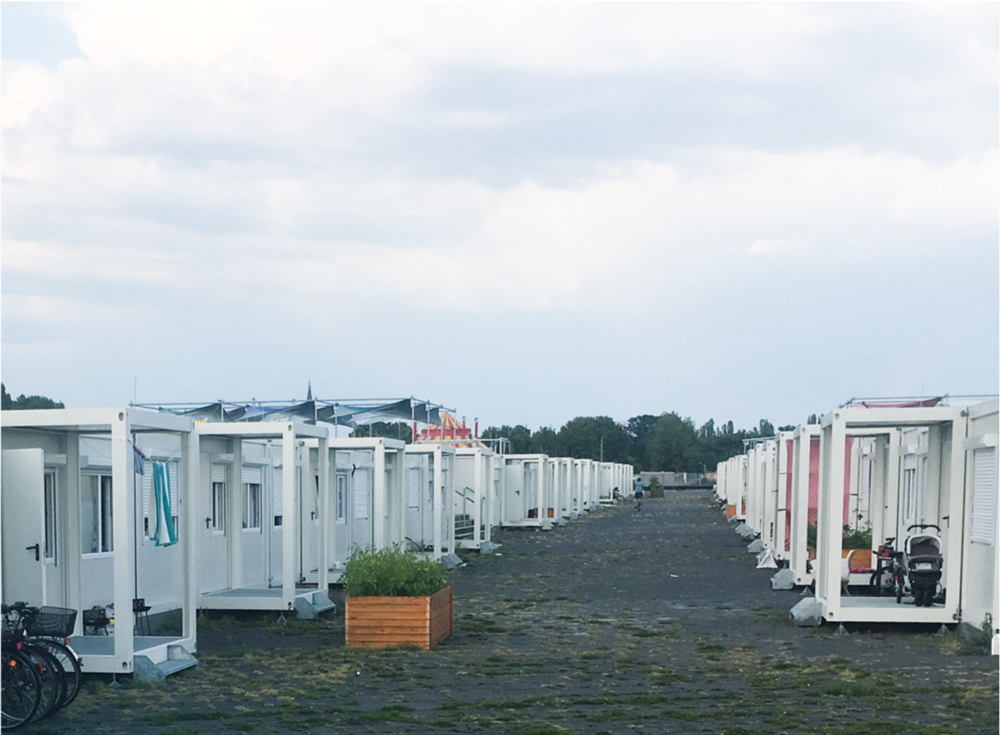

…people are not allowed to take a plane or a ferry to leave the countries in which their lives are threatened? They are forced to cross deserts, mountains and seas on very unsafe routes.
What happens when……on these journeys they get lost in the desert, the snow in the mountains becomes too high or the boat they are travelling on is in distress? Most likely they will lose their lives.
What happens when……states decide that their lives are not worth saving? Technically, this constitutes a breach of international law, as people have a right to be rescued. States however are looking for legal ways to stop the crossings, stop the rescues. They build physical and digital borders, establish cooperation with the states the people are trying to escape from and finance agencies that bring people back to the places that mistreat them.
What happens when……all these state efforts to prevent movement fail and people are still rescued and arrive in EUrope, are they then safe?
.
Forming part of a transnational civil society network that stands in solidarity with people on the move, we want to know what happens when people are rescued from distress at sea. We want to know whether they arrive in a safe place in EUrope and we want to be sure that the odyssey of their journey from the sea to the city has a happy ending.
We are sea rescue activists resisting the EU states' criminalisation of our continued efforts to prevent people from drowning in the sea. We are activists monitoring the EU reception centres and hotspots at the EU external borders and we are activists advocating for people when they struggle to receive a permit to stay and build a life after years of exhausting journeys on unsafe routes.
In a joint research project funded by the Stiftungsfonds Zivile Seenotrettung (Civil Sea Rescue Foundation), borderlineeurope – human rights without borders, borderline Sicilia, Equal Rights Beyond Borders, the Refugee Council Berlin and Sea-Watch conducted an in-depth investigation on the whereabouts of people rescued from distress at sea between 2019 and 2020.
It lies in our common interest to provide a critical analysis of supposedly humanitarian bordering practices from a grass-roots perspective, focusing on the demands of those affected by them: people on the move, rescued from distress at sea.
WHAT THIS REPORT IS ABOUT
The term “RELOCATION” has been part of the EU’s central agenda on migration since 2015. It was once more confirmed as the “solidary solution” concerning the question of the distribution of persons seeking protection in the EU in the latest New Pact on Migration and Asylum in 2020.¹
It was in 2018 however, that the general public became more aware of the issue of relocation, or as in this example at hand, the distribution of persons rescued from distress at sea.² With the blockages of the Italian and Maltese harbours for civil Search and Rescue (SAR) ships,³ as well as state run and merchant vessels, every disembarkation was aggressively delayed due to negotiations about the distribution of persons arriving at the EU’s external borders. In September 2019, the EU Commission agreed on a mechanism of temporary ad hoc distribution, the so-called Malta Agreement,⁴ signed by Germany, France, Malta and Italy. It was supposed to formalise the disembarkation and the following relocation process to participating Member States.
This report follows the route from Libya to Italy and Malta up to Germany and sheds light on the processes behind temporary relocation agreements. Based on testimonies of people, who were rescued from distress at sea and relocated within the EU, the report uncovers the (hidden) practices of institutional actors involved in the relocation process. Analysing EU policies, with reference to Italian and Maltese bordering practices, we will discuss the way the European Asylum Support Office (EASO) is involved in the relocation procedures. We also critically examine the opaque security checkups in Italy and Malta performed by the Domestic Intelligence Service of the Federal Republic of Germany (Bundesamt für Verfassungsschutz). With over 45 direct testimonies from people who passed through the relocation procedure, we will show the nontransparent mechanisms and disinformation of the relocation process. The three main parts of this report contextualise relocation on its different local levels.
The Italian case study takes a closer look at the selective processes of the EU and local institutions involved in the selection of those persons rescued from distress at sea to be relocated to another EU Member State. Thereby quoting testimonies from persons rescued from distress at sea, residing and waiting in the Italian hotspots. Furthermore, the Italian case study also criticises the hotspot approach as a EUropean⁵ solution, which instead of encouraging relocation to other EU states, leads to a massive deprivation of rights and to violence.
In the following case study on Malta, we will show that the Maltese practices of detention of asylum seekers inhibits the access to legal and social support for asylum seekers. Thus, it was more difficult to monitor the relocation mechanisms for people rescued from distress at sea. Nonetheless, contacts to people in Maltese detention facilities were established and based on a specific legal case, there will be a critical analysis of the German security checkups, performed by the German Domestic Intelligence Service.
Eventually, the third case study concentrates on the situation in Germany after the relocation process. The case study demonstrates that German authorities do not take into consideration the traumatic experiences people have suffered from during their journey to EUrope, nor do they provide sufficient information, support and assistance for a healthy arrival in Germany. This study thereby raises further questions on the humane aspect of relocation, since a closer look at the recognition rates shows that most people who were relocated to Germany received rejections shortly after arrival.
- European Commission 2020: Communication from the Commission on a New Pact on Asylum and Migration. COM(2020) 609 final: https://eur-lex.europa.eu/legal-content/EN/TXT/?qid=1601287338054&uri=COM%3A2020%3A609%3AFIN#document2 (last access 05.12.2020)
- In 2020, after the fires in Moria, EUrope’s most notorious hotspot for people seeking asylum on the Greek island Lesvos, public outcries for a relocation of persons from Greece to Germany dominated the public debate. DW 2020: Thousands march in Berlin to demand Germany take in Moria refugees. Thousands march in Berlin to demand Germany take in Moria refugees | News | DW | 21.09.2020 (last access 11.01.2021).
- See details on SAR arrivals and EU Member State discussion in Chapter 2.
- See Malta Agreement
- The term “EUropean” puts emphasis on a context where EU politics govern spaces, it is thus not to be mistaken for Europe as a continent, where many non-EU countries are subject to unfavorable EU decisions and practices.
Based on the three case studies on ITALY, MALTA and GERMANY and the statements of those affected, the report demonstrates that the relocation procedure lacks transparency, due process and above all, a humane treatment of persons arriving in EUrope seeking protection.
Therefore, as a collective of NGOs, activists and people affected by relocation WE DEMAND:
RELOCATION
AD HOC REDISTRIBUTIONS
The current EU ad hoc relocation system is the result of a political approach that, over the last two years, has made the disembarkation of people rescued from distress at sea subject to temporary relocation agreements. It aims at moving persons arriving in Italy or Malta to a different EUropean Member State. Starting from July 2018 and in the context of the closed-ports policy implemented by the former Italian government,¹ these agreements – which were supposed to work as an “exception” to the principles of the Dublin regulation² – have represented the EU's response to manage the arrival of people rescued at sea in Italy and Malta. Coordinated by the European Commission, the EU Member States adopted a ship-by-ship approach in order to address the refusal of Italy and Malta to allow disembarkation of people rescued by NGO (and sometimes military) vessels.³ Since summer 2018, disembarkations have been accompanied by long-lasting negotiations in which some EU Member States have taken responsibility by accepting a specific quota of rescued people, as Italian and Maltese authorities would have otherwise denied entry into their ports.⁴ This has resulted in a series of delayed disembarkations (standoffs) that have forced rescued people to stay at sea for prolonged periods of time in extremely precarious and unsafe conditions, while waiting for the outcomes of these negotiations on European level.⁵ By threatening SAR NGOs and forcing them into long standoffs at sea, the Italian and Maltese governments attempted to pressurise the EU Commission to renegotiate the criteria that assigns responsibility for the processing of asylum applications to the country of first arrival, as defined by the Dublin Regulation. The Dublin regulation has been considered as a burden by southern EU countries ever since its implementation.⁶
- Politico 2019: Matteo Salvini: Italian ports closed to migrants (by Thibault Larger), https://www.politico.eu/article/matteo-salvini-italian-ports-closed-to-migrants/ (last access 13.11.2020)
- Ammirati, A.; Gennari, L.; Massimi, A. (2020). Forced Mobility and the Hotspot Approach: The Case of the Informal Disembarkation Agreements, https://www.law.ox.ac.uk/research-subject-groups/centre-criminology/centreborder-criminologies/blog/2020/02/forced-mobility, (last access 28.10.2020).
- In August 2018, the Italian coast Guard vessel Diciotti was kept from disembarking 177 rescued persons in Sicily. The Guardian 2018: Standoff in Italian port as Salvini refuses to let refugees disembark. (by Lorenzo Tondo), https://www.theguardian.com/world/2018/aug/21/italy-refugees-salvini-refuses-coastguard-ship-docks-diciotti (last access 10.01.2021).
- Carrera, Sergio; Cortinovis, Roberto 2019: Search and Rescue, Disembarkation and Relocation Arrangements in the Mediterranean Sailing Away from Responsibility? In: CEPS Paper in Liberty and Security in Europe, No. 2019-10: p. 23.
- Relying On Relocation. Ecre’s Proposal For A Predictable And Fair Relocation Arrangement Following Disembarkation. 2016. Policy Paper 6. ECRE, https://www.ecre.org/wp-content/uploads/2019/01/Policy-Papers-06.pdf, (last access 10.11.2020).
- Lutz, Philipp; Kaufmann, David; Stünzi, Anna 2020: Humanitarian Protection as a European Public Good: The Strategic Role of States and Refugees. In: JCMS: Journal of Common Market Studies 58 (3): 757–75. https://doi.org/10.1111/jcms.12974.

DUBLIN REGULATION
The creation of the Schengen area in 1985 and its implementation into EUropean law with the Amsterdam Treaty in 1999, have led to non-EU citizens being confronted with a highly restrictive visa system regulating entry into the EU.¹ The Dublin regime, named after the first Dublin Regulation, signed in Dublin, Ireland in 1990, forms part of the EU’s border policies, directed towards “managing” the migration of asylum-seeking persons into the EU.² The Dublin Regulation determines which EU Member State is responsible for processing asylum applications of people arriving in EUrope. Though numerous amendments to the first Dublin Regulation were made over the course of the last 30 years, its main rule continues to hold that is to be the
EU Member State, in which the person first enters into the EU, that is responsible for processing the asylum application.³
According to EU authorities, the Dublin regime aims at preventing people seeking asylum to do so in multiple Member States. EU Member States which are located at the EU’s and Schengen area’s external borders such as Italy, Malta or Greece⁴ are thus by EU law responsible for processing the majority of asylum application of people arriving in the EU.
The ongoing discussion on EU level about the need for a relocation of asylum-seeking persons within the EU is thus a direct consequence of the Dublin regime.
It is well-known that the Dublin laws are primarily intended to organise border management, and, as will be shown in the following chapters, demonstrate a severe lack of concern for the needs of the people affected by the Dublin Regulation.⁵
Furthermore, if the Dublin regime foresees the processing of many asylum applications at the EU's external borders, how are EU external border states supposed to organise this process? Yet while detention and containment of asylum-seeking persons in crowded camps, lacking basic standards of accommodation and care, to say the least, is not a new strategy, the EU's Agenda on Migration in 2015 nonetheless claimed to have developed a new approach:
THE EU COMMISSION’S HOTSPOT APPROACH
- European Communities 1997: TREATY OF AMSTERDAM AMENDING THE TREATY ON EUROPEAN UNION, THE TREATIES ESTABLISHING THE EUROPEAN COMMUNITIES AND CERTAIN RELATED ACTS. https://www.europarl.europa.eu/topics/treaty/pdf/amst-en.pdf, (last access 25.12.2020).
- European Communities 1997: Convention determining the State responsible for examining applications for asylum lodged in one of the Member States of the European Communities, https://eur-lex.europa.eu/legal-content/EN/TXT/PDF/?uri=CELEX:41997A0819(01)&from=EN, (last access 25.12.2020).
- The Dublin III convention Regulation No. 604/2013 is the most recent valid EU convention concerning the responsibility for the examination of an asylum application inside the EU. Regulation (EU) No 604/2013 https://eur-lex.europa.eu/LexUriServ/LexUri-Serv.do?uri=OJ:L:2013:180:0031:0059:en:PDF (last access 25.12.2020).
- While Hungary, Slovakia and Poland also criticised the Dublin Regulation, only the Italian and Maltese and to some extent Greek cases are of relevance for this report.
- For the humanitarian exceptions in the Dublin Regulation, see Dublin Article 17 page 32
THE EU COMMISSION’S HOTSPOT APPROACH
„Approach where the European Asylum Support Office (EASO), the European Border and Coast Guard Agency (Frontex), Europol and Eurojust work on the ground with the authorities of frontline EU Member States which are facing disproportionate migratory pressures at the EU’s external borders to help to fulfill their obligations under EU law and swiftly identify, register and fingerprint incoming migrants.”¹
As stated above, the EU's external borders would not be affected by “migratory pressures” if it were not for the Dublin Regulation and, more importantly, persons seeking protection in the EU could do so in the country they would feel safest. The hotspot approach is thus directly linked to the Dublin regime. By having EU agencies in the first reception facilities in Greece and Italy, the hotspot approach was aimed at constituting a pillar for relocation:
„The hotspot approach will also contribute to the implementation of the temporary relocation schemes proposed by the European Commission on 27 May and 9 September 2015: people in clear need of international protection will be identified in f rontline EU Member States for relocation to other EU Member States where their asylum application will be processed.”²
Numerous studies on the hotspot approach,³ as well as critical voices on violations of basic rights and human needs have shown that the Commission’s intentions to facilitate a smoother and quicker relocation have failed. Instead, capacities of Greek and Italian first reception facilities, which had already been inappropriate for accommodating asylum seekers before the implementation of the hotspot approach in 2015, were turned into hotspots through the presence of several EU agencies. Thus, the accumulation of a high number of persons in small spaces, with all its dire consequences, actually increased because of the hotspot approach. Furthermore, the relocation of over 160.000 persons from Greece and Italy to other Member States between 2015 and 2017, as promised by the EU’s Agenda on Migration in 2015, was not executed. ⁴ Additionally, the implementation of the so-called EU-Turkey Deal in 2016 has turned Greek hotspots into closed detention facilities, where arbitrary and unlawful deportations and well-documented human rights violations have been ongoing for years.⁵ Ever since the implementation of the EU-Turkey Deal on March 20, 2016, the relocation mechanism has not been applied to persons who arrived on the Greek islands, thus suspending the idea that hotspots would serve as spaces that facilitate quicker relocation.⁶
Though the hotspot approach and temporary relocation schemes have not only failed because of the grave harm they cause to people, they have also proven to be ineffective in reaching their “solidary” goal to relieve “migratory pressure” in Greece and Italy. Still, the same procedures are put into practice in the Malta Agreement.⁷ The ad hoc relocation mechanism directed at the disembarkation and relocation of people rescued from distress at sea, which will be elaborated in more detail in the following section, forces persons arriving in Italy to stay in one of the four hotspots currently active.⁸
- EC 2015. Migration and Home Affairs. Hotspot Approach. https://ec.europa.eu/home-affairs/what-we-do/networks/european_migration_network/glossary_search/hotspot-approach_en (last access 10.01.2021).
- Ibid.
- Bousiou, Alexandra; Papada, Evie 2020: Introducing the EC Hotspot Approach: A Framing Analysis of EU’s Most Authoritative Crisis Policy Response, International Migration, 1-14; Tazzioli, Martina; Garelli, Glenda 2018: Containment beyond Detention: The Hotspot System and Disrupted Migration Movements across Europe.
- European Parliamentary Research Service 2020: Hotspots at EU external borders State of play (by Katrien Luyten and Anita Orav) (last access 11.01.2021).
- For a detailed discussion, see Valeria Hänsel and Bernd Kasparek 2020: “Hotspot-Lager als Blaupause für die Reform des Gemeinsamen Europäischen Asylsystems? Politikfolgenabschätzung des Hotspot-Ansatzes in Griechenland”, Rat für Migration. https://mediendienst-integration.de/fileadmin/Dateien/Hotspot_Lager_als_Blaupause_fuer_die_Reform_des_Gemeinsamen_Europaeischen_Asylsystems.pdf (last access 10.01.2021).
- Ziebritzki, Catharina ; Nestler, Robert: “Hotspots an der EU-Außengrenze. Eine rechtliche Bestandsaufnahme”, MPIL Research Paper Nr. 2017-17, S. 22 ff., https://ssrn.com/abstract=3028111, (last access 07.01.2021).
- For a detailed discussion on the Malta Agreement and its outcomes in Italy and Malta, see page 30
- For a more detailed discussion on the relocation procedures in Italian hotspots and experiences from people forced to stay there, see case study Italy page 34

THE NEW MIGRATION PACT: RELOCATION AND DEPORTATION
The EU's New Pact on Migration and Asylum from 2020 also suggests relocation schemes and complements them with so-called “return sponsorships” as the key point of a “new” approach towards migration.¹ It is questionable why a system that has proven to be ineffective and causes tremendous harm on people, continues to be the EU's only “solution” for the so-called Common European Asylum System (CEAS). The Migration Pact suggests maintaining the status quo with the hotspot approach at the EU’s maritime borders, while emphasizing the need for relocation.² However, relocation does only concern persons considered likely to be granted asylum, or persons rescued from distress at sea.³ As these pre-selections are put into practice with regards to respective asylum recognition rates and with regards to so-called safe third country agreements of several Member States,⁴ the individual right for asylum is removed before due process can take place. Fast track procedures in hotspot facilities do not respect individual rights to appeal rejection decisions and even bear the risk of deportation before a court decision can determine that a person might actually have a right to stay in EUrope.⁵
Despite obviously lacking constitutionality, the concept of “solidarity” among Member States is played with by the Migration Pact, offering those who do not want to accept asylum- seekers in their countries to conduct “returns.” ⁶ In practice, this proposition threatens to create further detention facilities, unnecessary relocation in EUrope from one country to another with a high risk of deportation after having to stay in reception facilities for many years.
Thus, no humane or realistic approach to migration has been provided by the EU’s Agenda on Migration from 2015, nor by the Malta Agreement or the EU Commission's proposal in its 2020 New Pact on Migration and Asylum. Migration remains to be considered an exception to the rule. The EU-agendas and agreements continue relating to new regulations and practices as "emergency" and "temporary” policy responses.⁷ In the following discussion on the disembarkation crisis and the issuance of the Malta Agreement, the arguments stated above will be supported by empirical evidence from the field research. An in-depth revision of the Commission’s New Pact on Migration is clearly needed.
- EC 2020: New Pact on Migration. A fresh start on migration in Europe. https://ec.europa.eu/info/strategy/priorities-2019-2024/promoting-our-european-way-life/new-pact-migration-and-asylum_en (last access 11.01.2021).
- Ibid.
- Ibid.
- Pro Asyl 2020: The "New Pact": new border procedures, more detention, no solution to old problems. p.4 f.. PRO-ASYL_New-Pact_Overview-of-the-most-important-aspects.pdf (last access 11.01.2021).
- Ibid. page 4.
- Ibid. page 7.
- EC 2020: New Pact on Migration. A fresh start on migration in Europe https://ec.europa.eu/info/strategy/priorities-2019-2024/promoting-our-european-way-life/new-pact-migration-and-asylum_en (last access 11.01.2021).
FROM PORT BLOCKAGES TO THE MALTA AGREEMENT
CLOSED PORT POLICIES
After the end of military search and rescue missions, such as Mare Nostrum in 2014, and the subsequent intensified financing and training of the so-called Libyan Coast Guard by the EU, the EU’s efforts to criminalise not only migration, but also civil Search and Rescue missions reached another level.¹ In addition to putting SAR missions under general suspicion and confiscating SAR vessels after arrival, the disembarkation of people rescued from distress at sea started to be used as a bargaining tool.
The first case that led to long negotiations and ended in a redistribution agreement, was an Italian and Maltese dispute about where to disembark the over 600 people saved by the civil rescue ship Aquarius in June 2018.² After the standoff between the two countries lasting for over a week, Spain finally gave authorisation to disembark in Valencia.³ Some people were relocated to France, while most stayed in Spain.⁴
After the Aquarius case, from June 2018 to June 2019, there were another 24 cases in which NGOs vessels had to spend an average of 9 days at sea, before an agreement between EU Member States was reached, assigning a safe harbour and allowing the disembarkation of the rescued people.⁵
One of the most striking cases occurred in January 2019: Sea-Watch and Sea-Eye respectively rescued 32 and 17 people off the Libyan coast. In extremely harsh weather conditions, they were left stranded at sea for 19 days,⁶ during which the Italian government clashed with Maltese authorities.⁷ Only after it was publicly announced that a redistribution agreement among eight countries (Germany, France, Portugal, Ireland, Romania, Luxembourg, the Netherlands and Italy) was found,⁸ the 49 people were eventually allowed to disembark in Malta.
The Sea-Watch 3 suffered the same fate again less than ten days later, having saved 47 people from a shipwreck in which at least 100 people drowned.⁹ It was stuck at sea for 13 days, eventually disembarking in Catania (Italy) when France, Germany, Portugal, Malta, Luxembourg, Romania and Lithuania pledged to relocate the asylum seekers.¹⁰
The 47 rescued people onboard the Sea- Watch 3 also submitted a request for interim measures against the port blockages in Italy to the European Court for Human Rights which, one day before their disembarkation, ordered the Italian government to take protective measures, specifically regarding minors on board.¹¹
The long standoffs involving SAR NGOs show in which ways the duty to bring anyone found in distress at sea to a Place of Safety “without any delay”¹² has been illegitimately subjected to the outcome of negotiations at EU level, mediated by specific national interests using the precarious conditions of those who were stranded at sea to force changes in EU migration policies. While during 2018, these ad hoc agreements were still conceived as an emergency measure to temporarily address the “disembarkation crisis”¹³ in 2019, EU altercations and long standoffs became the main systematic procedure to deal with rescue cases.¹⁴
In June 2019, the EU attempted to regulate distribution - as shown in a working paper by the European Council.¹⁵ The "Guidelines" are a non-binding proposal on how the reception of people rescued at sea by other Member States could be arranged. This also brings back memories of the highly problematic "disembarkation platforms" which were planned by the EU, but never implemented.¹⁶ The approach pursued in the Working Paper can be understood as a combination of the hotspot approach and the relocation approach.
- Oxfam Italia 2019: Accordo Italia-Libia: scacco ai diritti umani in 4 mosse (by Paolo Pezzati), https://www.oxfamitalia.org/wpcontent/uploads/2019/01/SCACCO_AI_DIRITTI_UMANI_IN_4_MOSSE_DEF..pdf (last access 12.11.2020).
- Corriere della Sera 2018: Migranti, scontro Italia-Malta. Salvini: «Porti chiusi all’Aquarius» Conte: “Noi lasciati soli” https://roma.corriere.it/notizie/cronaca/18_giugno_11/migranti-salvini-la-aquarius-non-potra-approdare-un-porto-italiano-28e19a16-6cb2-11e8-8fe1-92e098249b61.shtml (last access 12.11.2020).
- UNHCR 2018: UNHCR warns against repeat of Aquarius standoff, https://www.unhcr.org/news/press/2018/6/5b265af24/unhcr-warns-against-repeat-aquarius-disembarkation-standoff-boat-arrives.html (last access 12.11.2020).
- Carrera, Sergio; Cortinovis, Roberto. 2019: ‘Search and Rescue, Disembarkation and Relocation Arrangements in the Mediterranean Sailing Away from Responsibility?’ CEPS Paper in Liberty and Security in Europe, No. 2019-10: p. 24.
- ISPI 2019: Cosa c’è da sapere sul vertice di Malta (by Elena Corradi, Matteo Villa). https://www.ispionline.it/it/pubblicazione/migranti-e-ue-cosa-serve-sapere-sul-vertice-di-malta-23970 (last access 28.10.2020).
- The New York Times 2019: Rescued Migrants, at Sea for Weeks, Struggle to Reach a New Life (by Patrick Kingsley), https://www.nytimes.com/2019/01/08/world/europe/migrants-stranded-sea-watch.html (last access 29.10.2020).
- The Guardian 2019: Italian government rift over fate of 49 people stuck on rescue ships (by Angela Giuffrida e Lorenzo Tondo), https://www.theguardian.com/world/2019/jan/07/italian-government-rift-over-fate-of-49-people-stuck-on-rescue-ships (last access 12.11.2020).
- According to this agreement, another 249 persons previously rescued by Maltese military vessels would have been part of the relocation to these European countries. See: European Commission 2019: Remarks by Commissioner Dimitri Avramopoulos on the solution found with regards to the disembarkations on NGOs vessels and progress under the European Agenda on Migration. https://ec.europa.eu/commission/presscorner/detail/en/SPEECH_19_304 (last access 29.10.2020).
- The Malta Independent: Sea-Watch 3 rescues 47 people from drowning https://www.independent.com.mt/articles/2019-01-19/local-news/Sea-Watch-3-rescues-47-people-from-drowning-6736202340 (last access 12.11.2020).
- Ansa 2019: Conte, tra poche ore sbarco SeaWatch, https://www.ansa.it/sito/notizie/topnews/2019/01/30/conte-tra-poche-oresbarco-sea-watch_b59258d0-0aef-4744-abd2-3209905cd3c3.html (last access 29.10.2020).
- Council of Europe 2019: ECHR grants an interim measure in case concerning the Sea Watch 3 vessel, https://www.coe.int/en/web/special-representative-secretary-general-migration-refugees/newsletter-february-2019/-/asset_publisher/cVKOAoro-BOtI/content/echr-grants-an-interim-measure-in-case-concerning-the-seawatch-3-vessel?inheritRedirect=false (last access 29.10.2020).
- Art. VIII(b)(vi)(2)(bb) SOLAS and Art. 111(2)(f) SAR. IMO (2004), Adoption of Amendments to the International Convention for the Safety of Life at Sea, 1974, as amended, MSC Res. 153(78), MSC Doc. 78/26.Add.1, Annex 3 (May 20, 2004); IMO, Adoption of Amendments to the International Convention on Maritime Search and Rescue, 1979, as amended, Res. MSC 155(78), MSC Doc. 78/26.add.1, Annex 5, May 20. For a summary on Maritime Law see: Keller, Vera Magali, Florian Schölerand Marco Goldoni: Not a Safe Place?: Italy’s Decision to Declare Its Ports Unsafe under International Maritime Law, VerfBlog, 2020/4/14, https://verfassungsblog.de/not-a-safe-place/ (last access 11.01.2021).
- Carrera, Sergio; Cortinovis, Roberto. 2019: ‘Search and Rescue, Disembarkation and Relocation Arrangements in the Mediterranean Sailing Away from Responsibility?’ CEPS Paper in Liberty and Security in Europe, No. 2019-10, p. 1–51.
- Ibid.
- European Council of Europe 2019: Guidelines on temporary arrangements for disembarkation, https://www.statewatch.org/media/documents/news/2019/jun/eu-council-wk-guidelines-on-temporary-arrangement-disembarkation.pdf (last access 06.01.2020).
- ECRE 2018: European Council: regional disembarkation platforms a key objective. https://www.ecre.org/european-council-regional-disembarkation-platforms-a-key-objective/ (last access 11.01.2021).
PROPOSED MECHANISM FOR DISTRIBUTION
The European Council’s six-page Working Paper from June 12, 2019,¹ contains nine chapters and essentially summarises what has been discussed repeatedly and led to the Malta Agreement in September 2019. The Malta Agreement itself does not include detailed information regarding the procedural steps to be taken during a disembarkation and relocation. Therefore, the Guidelines on temporary arrangements for disembarkation are more detailed and can be seen as a concept for a Standard Operating Procedure (SOP) for the disembarkation mechanism.
The first part of the Guidelines points out the main objectives and principles that guide the temporary mechanism. Notably, the participation of the Member States as voluntary is emphasised, as well as the fundamental objective of optimising the handling of disembarkation cases. The basis for this is the experience gained from previous disembarkation cases, which was developed in the framework of "best practices". The commitment to existing national and EUropean legal requirements is explicitly formulated and the temporary character of the agreement is explained.
The second part clarifies when this mechanism is to be applied: it is essentially only to be used for "search and rescue" operations or other landings if there is a humanitarian reason. What exactly this means remains unclear. However, the mechanism, in theory, is also applied to the relocation of protection seekers from the EU hotspots² and mainland Greece. This was also the case for (only) 1500 people after the notorious Camp Moria burnt down in 2020.³ The Member States are supposed to make a request for redistribution and a declaration in case they are "under pressure".
The third part deals with the structure and tasks of a "supporting platform" that is to be responsible for implementing the distribution mechanism. This is coordinated by the EU Commission in cooperation with the Integrated Political Crisis Response (IPCR) and, if necessary, in consultation with the UNHCR and IOM. The fourth part contains the specific procedures that the state of disembarkation should take into account – in practice, experience shows that this would be Italy or Malta for the time being. Certain procedural steps are described which are to be carried out in the Member State of disembarkation.
The fifth part deals with the "composition of the relocation pool" – the core of the redistribution procedure – in only one sentence. The sixth part briefly describes the involvement of the European Asylum Support Office (EASO), Frontex and Europol. EASO is to be involved, for example, in drawing up the "matching criteria" for redistribution and coordinating the processes. Frontex and Europol are to assist in security screening, Frontex is to take fingerprints and organise returns.
- European Council of Europe 2019: Guidelines on temporary arrangements for disembarkation, https://www.statewatch.org/media/documents/news/2019/jun/eu-council-wk-guidelines-on-temporary-arrangement-disembarkation.pdf (last access 06.01.2020).
- As mentioned before, with the EU Turkey Deal in 2016, relocation mechanisms from the hotspots on Greek islands were suspended.
- Frankfurter Rundschau 2020: Moria: Angela Merkel und Horst Seehofer planen Aufnahme von 1.500 Geflüchteten aus Lesbos (by Rogalla et al.), https://www.fr.de/politik/moria-griechenland-fluechtlingslager-lesbos-horst-seehofer-aufnahme-angela-merkel-90039820.html (last access 11.01.2021).
THE MALTA AGREEMENT
The Malta Agreement became effective after the former Italian government, whose policies had led to the ship-by-ship approach and to long standoffs for SAR NGOs, fell and was dismissed.¹ The new coalition governing the Italian parliament sought to formalise and accelerate the relocation procedures in order to avoid harsh negotiations and in an effort to prevent sources of frictions among EU Member States but also to show itself unassociated with the harsh and uncivil tones of former Italian government – despite sharing a significant amount of ministers.²
On the 23rd of September 2019, Germany, France, Italy and Malta met in La Valletta in the presence of the Finnish Presidency of the EU Council and the European Commission. They came together to discuss a joint declaration of intent about establishing a common mechanism of disembarkation in order to avoid long standoffs, and of relocation “in case of disproportionate migratory pressure in participating States.”³
Despite the official presence of the Finnish Council Presidency, the meeting was an informal summit with the objective to discuss a contribution to be proposed in future Council meetings.⁴ According to paragraph 15 of the joint declaration from Malta, it was intended as a six month pilot project later to be advanced as a possible reform of the Common European Asylum System.
The following description of the paragraphs summarises the key points of the joint declaration:
(§§ 1-2) A solidarity mechanism of relocation, ensuring safe and dignified disembarkation and swift relocation for migrants taken aboard vessels;
(§§ 3) A voluntary call to Member States to participate in the mechanism and also to provide alternative places of safety for vessels in case of disproportionate arrivals;
(§§ 4-7) The use of fast track systems to create standard procedures of registration, relocation, and repatriation.
However, no real standard procedure or regulation is drafted in the document. It merely claims that the mechanism is voluntary implying that it is up to the Member States to decide whether or not to participate in the relocation or providing an alternative place of safety on a ship-by-ship basis. Concerning the mechanism itself, the document says it is supposed to be “swift” and take no longer than 4 weeks (§ 2). The procedures are meant to be “building on and improving existing practices” (§ 4), referring to the procedures implemented since June 2018 to manage the relocation of people rescued at sea.
Besides, it does not establish any criteria for the selection of people and their distribution in the voluntary quota pledged by Member States. This implies it is entirely at the EU agencies’ and Member States’ discretion to pre-select and thus discriminate among different individual cases and profiles.⁵
Moreover, the declaration includes several provisions for SAR NGOs; not to facilitate the departure of people from African shores, not to obstruct so-called Libyan Coast Guard’s operations, and to comply with national legislation by undergoing checks on safety procedures (§ 9-10). These measures are taken with regard to the declared intent (§ 12-14) of intensifying EU led aerial surveillance and to externalise SAR operations to Southern Mediterranean third countries, rather than SAR programs led by the EU or the EU civil society.⁶
The pilot project started off immediately and, as expected, did not lead to a more dignified disembarkation process for SAR NGOs and only to minor improvement concerning the duration of standoffs compared to the time before the Malta Agreement. In the period between September 2019 and February 2020, a further "disembarkation crisis" occurred with standoffs lasting an average of more than four days (with 12 days being the longest), in contrast to the more than 10 days waiting period before the informal summit.⁷
It is also interesting to note that no redistribution for people autonomously arriving in EU Member States was discussed. While the Malta Agreement was brought on by the “disembarkation crisis”, people saved by SAR NGOs count for only 8% of migrants arriving in Italy between June 2018 and August 2019.⁸ In this timeframe, while SAR NGOs saved and disembarked 1.356 persons in Italy, of which 593 were actually relocated, the Dublin Regulation was still being applied to the over 15.000 people arriving at Italian shores autonomously.⁹
On the one hand, this shows how the former Italian government’s "closed-port" policy was a failure, used as a way to attract and lure voters by focusing its severe policies on NGOs' disembarkations, the most visible aspect of migration due to media coverage. On the other hand, it clearly demonstrates that this relocation mechanism was never meant to overcome or replace Dublin. Instead, it is one way of applying it and does not change the Dublin system.
- The Guardian 2020: Salvini's failure brings respite for embattled Italian government (by Agela Giuffrida), https://www.theguardian.com/world/2020/jan/27/salvini-failure-brings-respite-embattled-italian-government (last access 12.11.2020).
- CBC: Italy changes course on immigration with new minister Luciana Lamorgese (by Megan Williams), https://www.cbc.ca/news/world/luciana-lamorgese-italy-immigration-1.5284545 (last access 12.11.2020).
- Joint Declaration of Intent on a Controlled Emergency Procedure. La Valletta, Malta. 23 September 2019. https://download.repubblica.it/pdf/2019/politica/joint-declaration.pdf (last access 12.11.2020).
- Carrera, Sergio; Cortinovis, Roberto. 2019: ‘The Malta Declaration on SAR and Relocation: A Predictable EU Solidarity Mechanism?’ 2019–14. Policy Insights. CESP. p. 4.
- Ibid. p. 4-5.
- Ibid. p. 6.
- ISPI 2019: Migrazione nel Mediterraneo: Tutti I Numeri (by Matteo Villa) https://www.ispionline.it/it/pubblicazione/migrazioni-nel-mediterraneo-tutti-i-numeri-24892 (last access 13.11.2020).
- ISPI 2019: Cosa c’è da sapere sul vertice di Malta (by Elena Corradi and Matteo Villa), https://www.ispionline.it/it/pubblicazione/migranti-e-ue-cosa-serve-sapere-sul-vertice-di-malta-23970 (last access 28.10.2020).
- Ibid.
ARRIVAL AND RELOCATION PROCEDURES
Relocation procedures begin after the EU Member States come to an intergovernmental agreement on relocation quotas and the vessels are assigned a harbour for disembarkation. However, given the lack of standard procedures, the informality of the agreements, and the broad spectrum of interpretation of Art. 17, the relocation procedures have been refined while being implemented, and adapted to temporary ad hoc informal agreements on a case to case basis.
Here, we analyse the relocation procedures implemented in Italy from June 2018 to September 2020 referring to policy procedures in practice on the ground in Italy and numerous visits to hotspot facilities.¹ The research on the ground included monitoring the arrival situation, living conditions in the hotspots and collecting testimonies from people rescued from distress at sea and subjected to relocation procedures. In addition to several informal conversations and phone calls, we also conducted in-depth interviews with approximately 10 people, following up on their stories before and after relocation to other Member States.
During this period, there were 51 cases in which disembarkations were only allowed after a relocation agreement was made.² This period coincides also with the development of a relocation standard operating procedure, ³ divided into three steps.
In the next section, we will follow these three steps from:
(a) the arrival in the hotspot, the Frontex security interview and registration in EURODAC, to
(b) the transfer to the reception centre, EASO interview, and matching of asylum seekers with Member States. In this phase, the matching list is delivered to the EU Commission.
Lastly, (c) Member States have the option to interview asylum seekers again for security clearance or to check the profiles with their own criteria.
- As entrance to the facilities is not granted to NGOs or other non-state actors, we were forced to meet people outside the facilities.
- ISPI 2019: Migrazione nel Mediterraneo: Tutti I Numeri (by Matteo Villa), https://www.ispionline.it/it/pub-blicazione/migrazioni-nel-mediterraneo-tutti-i-numeri-24892 (last access 13.11.2020).
- EASO 2020: Annual General Report 2019, p.7., https://www.easo.europa.eu/sites/default/files/EASO%20Annual%20General%20Report%202019.pdf (last access 25.11.2020).
DISEMBARKATION AND THE BEGINNING OF THE RELOCATION PROCEDURE
The relocation procedure starts in the centre of first identification, where the hotspot approach is implemented.¹ The hotspot centres are responsible for the identification of migrants and the registration of fingerprints into the EURODAC system.²
In Italy, there are currently four active centres used for the hotspot approach, three of which are in Sicily (Messina, Pozzallo, and Lampedusa) and one in Apulia (Taranto).⁴ Several reports (by NGOs and EU institutions) and academic articles have denounced the
conditions within these Italian hotspot centres due to the failure to provide for basic needs and the degrading treatment of people.⁵
The identification of people is usually carried out by Frontex and while this first interview is mandatory for all people brought to the hotspot regardless of whether they will be part of a relocation mechanism or not, this step also represents the beginning of
the relocation procedure. In the document provided by the Italian Ministry of Interior, which describes the Standard Operating Procedures (SOPs) for the hotspots, the step-by-step instructions to carry out routine operations, it is stated⁶ that Frontex’ tasks are to
interview migrants, verify documents, and register individuals into various databases in coordination with EASO and Europol.
Testimonies allege that interviews were done by Frontex, assisted by the Italian Coast Guards, both of which were perceived as police agencies by the people we spoke to during our research. Moreover, no information about the procedure itself was ever given to the newly arrived, who only knew of the fact that they were supposed to be relocated to another country.⁷
During these interviews, asylum seekers were asked a series of questions related to general personal information. This is the first of three similar interviews which asylum seekers to be relocated need to undergo before the actual relocation to a different country.
The Frontex interview is carried out a couple of days after disembarkation, in one of the Italian hotspots. The questions have been reconstructed with the help from the rescued people. They entail personal questions about the country of origin, family relations, but also about religious faith, ethnic group and citizenship. During the interview, Frontex carries out a security check in order to understand whether asylum seekers were active in military groups or organisations. This part of the interview is also coupled with questions about their motivation to leave their country of origin and reasons to fear a possible return. Moreover, some questions are asked to assess the medical conditions and a potential need for medical intervention. Despite this fact, our research revealed that many people in need of medical attention were not receiving any medical or psychological treatment, with some people displaying open wounds, while others showing signs of post-traumatic stress disorder.⁸
The people encountered throughout our research were mostly coming from long standoffs at sea, after experiencing civil war and periods of detention in Libya. Moreover, they were aware of the fact that their prolonged period at sea was caused by the unwillingness of the Italian government to disembark them. After their arrival, they had to undergo security checks and interviews by police officers – as they described them during our research. They could be kept in detention for up to 30 days,⁹ had their telephones confiscated, ¹⁰ and received no legal information or support. This shows how the EU has criminalised seeking asylum and that the hotspot is perceived as a kind of detention facility,¹¹ into which NGOs, journalists and other civil society organisations cannot enter.
- For the sake of differentiating between different centres, the centres of first identification where the “hotspot approach” is implemented are hereafter referred to as hotspots.
- European Union 2015: European Agenda on Migration, https://ec.europa.eu/home-affairs/sites/homeaffairs/files/what-we-do/policies/european-agenda-migration/background-information/docs/communication_on_the_european_agenda_on_migration_en.pdf (last access 19.11.2020).
- European Council of Europe 2019: Guidelines on temporary arrangements for disembarkation, https://www.statewatch.org/media/documents/news/2019/jun/eu-council-wk-guidelines-on-temporary-arrangement-disembarkation.pdf (last access 06.01.2020).
- European Union 2019: Hotspot at the EU External Borders. State of Play. https://www.europarl.europa.eu/RegData/etudes/BRIE/2018/623563/EPRS_BRI(2018)623563_EN.pdf (last access 19.11.2020). The document refers also to a fifth Italian hotspot in Trapani, which however is a repatriation centre, that has not been mentioned in any other document relating to the relocation approach.
- Bousiou, Alexandra; Papada, Evie 2020: Introducing the EC Hotspot Approach: A Framing Analysis of EU’s Most Authoritative Crisis Policy Response. In: International Migration, 1-14 ; Tazzioli, M, and G Garelli. 2018. ‘Containment beyond Detention: The Hotspot System and Disrupted Migration Movements across Europe’. Environment and Planning and Society ; Sciurba, Alessandra. 2018 ‘Ai confini dei diritti. Richiedenti asilo tra normativa e prassi, dall’hotspot alla decisione della Commissione territoriale’. Questione Giustizia (2), 145-157; Council of Europe 2018: Anti-torture Committee publishes report on its visit to Italian “hotspots” and removal centres. https://www.coe.int/en/web/cpt/-/anti-torture-committee-publishes-report-on-its-visitto-italian-hotspots-and-removal-centres (last access 19.11.2020).
- Ministero Degli Interni 2016. Standard Operating Procedures. https://www.meltingpot.org/IMG/pdf/hotspots_sops_-_english_version.pdf (last access 25.11.2020).
- Borderline Sicilia 2019: From Libya to the limbo of hotspots: the fate of asylum applicants in relocation procedures (by Silvia di Meo, Valeria Grimaldi, Giuseppe Platania), https://www.borderlinesicilia.it/en/monitoring/from-libya-to-the-limbo-of-hotspots-the-fate-of-asylum-applicants-in-relocationprocedures/ (last access 25.11.2020).
- Ibid.
- Law 113/2018. https://www.gazzettaufficiale.it/eli/id/2019/06/14/19G00063/sg (last access 25.11.2020).
- Ibid.
- Guarante Libertà civili dei detenuti, relazione al parlamento, p.30, https://www.osservatoriodiritti.it/wp-content/uploads/2018/06/hotspot-migranti.pdf (last access 02.12.2020).
WE DEMAND:
FROM ONE HOTSPOT TO THE OTHER: THE EUROPEAN ASYLUM SUPPORT OFFICE
interview and selection
After their identification and a supposedly maximum stay of 30 days in a hotspot, people eligible for relocation are usually moved to a reception centre to start the second phase of the relocation procedure.
The European Asylum Support Office (EASO) has been refining the relocation procedure while already enforcing it. As there is a lack of formal legal regulations for relocation procedures, EASO is able to arbitrarily implement selection procedures, later formalising them as “temporary mechanisms”, without there being any possibility to legally appeal the decisions.
EASO claimed in September 2019 to have finalised the “Messina Model” meant as “practical modus operandi” to effectuate relocations.¹ The Messina hotspot is the place where the relocation procedures have mostly been put into practice and refined as most SAR NGO disembarkations (approx. 90%) between 2019 and 2020 took place in Italy.²
Moreover, during our research, we found that many people, even when arriving in other places, were brought to Messina to continue the relocation procedure. This seems to be due to the fact that
while the maximum stay in a hotspot is supposed to be four weeks, the centre in Messina allows for a continued relocation procedure without any transfer
as it has a standard reception centre connected to the hotspot. The reason why Messina became a model is that while relocations, according to the Malta Agreement, should take place in less than four weeks, this has never happened in practice.
However, Messina, as other Italian hotspots, has been condemned for the inadequate and unhealthy conditions of the centre.³ Asylum seekers are placed in metal plate shacks without ventilation and the necessary space to live.⁴ During our research, we met several people telling us about the condition within Messina and the other Italian hotspots.
E. is an adult Cameroonian saved by Sea-Watch 3 in June 2019, who waited 17 days at sea in rough weather conditions before disembarking in Lampedusa. The ship had entered Italian territorial waters in a state of necessity, and almost 60 hours later entered the port of Lampedusa. Even after this long period at sea, the disembarkation was still not authorised by the Italian authorities. Given the deteriorating conditions within the vessel, Captain Rackete rightfully decided to approach Lampedusa’s harbour nonetheless to disembark the remaining 40 survivors on board. She was wrongfully arrested, and the vessel confiscated, while later being dismissed from all the charges. Only after the disembarkation had already taken place, several countries agreed on relocating some of the people saved by the SAR NGO vessel.5 In Lampedusa, E. was interrogated by the Italian Coast Guard, and had fingerprints taken. During the two weeks stay in Lampedusa, E. was not allowed to go out.
Later, E. was moved to Messina, where we met the first time. In October 2019, E. was still wearing the trousers they had given E. about four months before on the vessel and was living together with all the other people disembarked from Sea-Watch in the same big hall spread out with mattresses without any separation. Neither money, nor clothes or medical services were provided and E. had received no information whatsoever on the relocation and operators answered with the mantra of “you’re gonna be relocated.”
Some people from this same disembarkation group still showed signs of recent wounds inflicted on them in Libya, and none had seen a doctor since their arrival in Messina. Moreover, there was no cultural or linguistic mediation provided in the camp, which made communication and expressing grievances more difficult, if not impossible. Our meeting with E. and the other people disembarked from Sea-Watch 3 in June 2019 made several organisations (ASGI, Borderline Sicilia, Action Aid) send a letter to Italian authorities addressing the lack of medical and psychological help, the absence of linguistic mediation and any form of legal support.6 Staying in Messina from July to November 2019, E. was firstly interviewed by the EASO and then matched with Germany.
The EASO interview is the beginning of the second phase of the relocation procedure. This is the crucial phase concerning the relocation and indeed it marks the real first specific procedure purposefully designed for the relocation scheme. In this sense, EASO plays a pivotal role in the temporary ad hoc relocation procedure, being the agency appointed to interview, select, and match the respective persons with EU Member States.⁷
EASO interviews all asylum seekers arriving in Italy, in order to formalise the asylum requests by filling in the so-called C3 form.⁸ This is also the case referring to the ad hoc relocations⁹ in spite of prior negotiations where Member States have established the possibility of relocating asylum seekers from the country of disembarkation, since the Member State where the asylum request is lodged needs to ask for another Member State to take charge of the application according to Art. 17 of the Dublin Regulation, which is used to legally ground the relocation. In this sense, the only way to allow relocation in light of Art. 17 is to formalise the asylum applications in Italy and then request other Member States to take over responsibility of assessing the asylum application.
The EASO interviews conducted during the ad hoc relocation differ from the standard ones applied to all other asylum cases. According to our interview partners, during the interview EASO does not only ask the applicant questions related to the personal information in order to fill in the asylum application form, but also extensively interrogates them about their story. By asking questions about the political and economic situation in their country of origin and the countries they passed through, EASO verifies the applicants’ stories. The interviews last a couple of hours, and no documents are ever given to applicants. This is an issue insofar as asylum seekers waiting months for their relocation have no documents actually certifying their legal status, generating doubts on whether relocation will actually happen. As will be shown in the case study on Germany, interviews conducted in Italy were later on compared to statements made in following interviews conducted by German authorities after the relocation procedure. The lack of transparency and information for the relocated people is striking.
- EASO 2019: Note on the ‘Messina Model’ applied in the context of ad hoc relocation arrangements following disembarkation, https://reliefweb.int/report/world/note-messina-model-applied-context-ad-hoc-relocation-arrangements-following (last access 25.11.2020).
- Carrera, Sergio; Cortinovis, Roberto 2019: Search and Rescue, Disembarkation and Relocation Arrangements in the Mediterranean Sailing Away from Responsibility? CEPS Paper in Liberty and Security in Europe, No. 2019-10: 1–51.
- See for example the 2019 press release by ASGI, Action Aid, Borderline Sicilia, IndieWatch, Medici per I Diritti Umani, Sea-Watch: https://www.borderlinesicilia.it/en/uncategorised/from-one-confinement-to-another-the-illegitimate-detention-of-the-sea-watch-migrants-in-the-hotspot-of-messina/ (last access 02.12.2020).
- Stampa Libera 2018. Hotspot Migranti di Messina. Disumano e abusivo (by Antonio Mazzeo), http://www.stampalibera.it/2018/08/29/linchiesta-di-antonio-mazzeo-hotspot-migranti-di-messina-disumano-e-abusivo/ (last access 03.12.2020).
- DW 2019: Sea Watch migrants to disembark in 'coming hours': Italian PM, https://www.dw.com/en/sea-watch-migrants-to-disembark-in-cominghours-italian-pm/a-47286733 (last access 03.12.2020).
- Borderline Sicilia 2019: Messina’s Hotspot: Deficiencies in Redistribution of Migrants. An Complaint by ASGI, Borderline Sicilia and Action Aid, https://www.borderlinesicilia.it/en/monitoring/messinas-hotspot-deficiencies-in-redistribution-of-migrants-an-complaint-by-asgi-borderline-sicilia-and-actionaid/ (last access 05.12.2020).
- EASO 2019: Standard internal procedures for ad hoc relocation exercises, https://inlimine.asgi.it/wp-content/uploads/2020/11/Standard-Operating-Procedures-for-ad-hoc-relocation-exercises.pdf (last access 25.11.2020).
- Operating Plan Agreed by EASO and Italy 2017, p. 14, https://www.easo.europa.eu/sites/default/files/Italy-OP-2018.pdf (last access 25.11.2019).
- EASO 2019: Note on the ‘Messina Model’ applied in the context of ad hoc relocation arrangements following disembarkation, https://reliefweb.int/ report/world/note-messina-model-applied-context-ad-hoc-relocation-arrangements-following (last access 25.11.2020); EASO 2019: Standard internal procedures for ad hoc relocation exercises, https://inlimine.asgi.it/wp-content/uploads/2020/11/Standard-Operating-Procedures-for-ad-hoc-relocation-exercises.pdf (last access 25.11.2020).
DUBIOUS SELECTION CRITERIA
After the interview, EASO compiles a list matching asylum-seekers with Member States and hands it over to the EU Commission.¹ The criteria according to which asylum seekers are categorised and matched is described in the internal SOPs² and are the following:
- application of Dublin criteria and urgent vulnerable cases
- other family links
- cultural links
- subsequent fair, transparent and proportional allocation system among participating Member States
After the four points, the SOPs document states “[a]s far as possible the matching process also takes into account any constraints or indications expressed by the relocating Member States.”³
The first two points show the Dublin regulation is still applied during the ad hoc relocation procedure. Instead, the last two points (with the annexed specification) raise some questions and doubts. They refer to vague “cultural considerations” [sic.] that should be taken into account when applying Art. 17(2) for the relocation procedures.⁴ The article 17(2)
indeed claims that relocation should happen on “humanitarian grounds based in particular on family or cultural considerations.” However, it is not clear what these cultural links or considerations should entail. By reading this in light of the annotation about matching indications expressed by Member States, there is the possibility of de facto putting into practice
procedures which discriminate asylum seekers on an ethnic or religious basis because they would not be homogenous to the relocating country.⁵ The list compiled according to the criteria expressed by EASO is delivered to the EU Commission and the Member States that took responsibility for applications from a specific disembarkation.⁶
The Member States may accept or comment and ask for modification of the list to EASO.⁷ Just like the other steps of the relocation procedure, the adjustments lack transparency concerning the indications expressed by the Member States. This is harmful for the asylum seekers stuck in Italy for the duration of the entire procedure since they have no clear understanding on why a specific country was chosen for them, or why they have been rejected. As for the other phases of the relocation, no document or written (nor oral) explanation was given to the asylum seeking person.
After the EASO interview, asylum seekers might be interviewed by national delegations in charge of verifying the profiles selected by EASO. Since the matching has already been delivered and accepted by Member States at this point, this last step is not mandatory. However, since no actual quota has ever been discussed, Member States can still reject asylum relocation cases during this last passage. This third and last step of the relocation procedures is also the slowest. In fact, regardless of the specific delegation, it takes several months to be interviewed, with the slowest country being Germany, having conducted interviews up to 6 months after disembarkation.
In this sense, the provisions of Malta Agreement for fast and swift relocations in less than four weeks⁸ were never put into practice. On the contrary, a constant and stable feature of the relocation procedure was the long wait in Italian hotspots and reception centres.
- EASO 2019: Standard internal procedures for ad hoc relocation exercises, https://inlimine.asgi.it/wp-content/uploads/2020/11/Standard-Operating-Procedures-for-ad-hoc-relocation-exercises.pdf (last access 25.11.2020).
- Ibid.
- Ibid. p. 2.
- See Dublin Art. 17, page 32
- Ammirati, A., Gennari, L. and Massimi, A. 2020: Forced Mobility and the Hotspot Approach: The Case of the Informal Disembarkation Agreements, https://www.law.ox.ac.uk/research-subject-groups/centre-criminology/centreborder-criminologies/blog/2020/02/forced-mobility (last access 28.10.2020).
- EASO 2019: Standard internal procedures for ad hoc relocation exercises https://inlimine.asgi.it/wp-content/uploads/2020/11/Standard-Operating-Procedures-for-ad-hoc-relocation-exercises.pdf (last access 25.11.2020).
- Ibid.
- Joint Declaration of Intent on a Controlled Emergency Procedure. La Valletta, Malta. 23 September 2019, https://download.repubblica.it/pdf/2019/politica/joint-declaration.pdf (last access 13.11.2020).
MEMBER STATE DELEGATIONS: FRANCE, GERMANY, AND PORTUGAL
The discretionary measures and the lack of a standard regulation concerning Member States’ interviews implies a high degree of arbitrariness in the procedures. Different Member States have opted for different methodologies and thus for different EASO support and coordination.¹ Here we analyse the main three countries that have participated in the relocation procedures: France, Germany, and Portugal.
With regards to Portugal, EASO states that their team has not only evaluated asylum seekers to match the country but has also carried out the “exclusion interview” on its behalf.² Thus, no Portuguese delegation travelled to Italy to conduct security checkups or interview people with regards to their asylum grounds.
It has not been possible to establish a general trend concerning the outcomes of the interviews and the people we have been in contact with are now in different situations. It seems that some of the people relocated to Portugal from Italy in 2020 obtained some form of international protection. However, from another person directly in contact with us, who was relocated to Portugal in March 2019, we know that three people relocated in the same period from Malta and Italy got their asylum applications rejected and are currently waiting for the results of the appeal they filed. Other 3 persons have been waiting for almost two years for the results of their asylum interviews. They all received a temporary residence permit that allows them to work and needs to be renewed every six months. These people have had this permit to stay renewed three times already, allowing some of them to start working in the country while remaining in a legally precarious situation.
France seems to adopt a different approach. The French delegation interviewed asylum seekers in order to search for cases with a higher chance to obtain international protection ³ while rejecting all other applicants suggested by the EASO list. From the reports of the people who were eventually relocated to France, it is clear that France conducted actual asylum interviews in Italy and Malta aiming at selecting people to relocate and determining, at the same time, the recognition or the refusal of the international protection. Thus, the exclusion from the possibility to be relocated is determined by an actual asylum interview which is supposed to be independent from the relocation procedures. This is problematic insofar as it does not grant persons denied relocation the right to appeal the rejection decision.
Concluding from our qualitative fieldwork, people who have been interviewed by- and relocated to France did not go through any other asylum interview once relocated and were all granted international protection in a reasonable time once in France.
People who instead have been relocated to Germany had to start the entire asylum procedure once relocated. This suggests that the German delegation is merely conducting security clearance interviews in Italy, without assessing the chance of international protection. However, the questions asked by the German delegations correspond to the ones that are asked during the asylum interview in Germany, as testified by many people relocated to Germany.
So, while Portugal has mostly taken the EASO list and relocated migrants, trusting the EASO assessment, France has directly conducted asylum interviews in Italy. Germany, on the other hand, questioned asylum seekers in Italy to then start asylum applications anew once relocated. The lack of consistency is harmful for asylum seekers; they had no clear overview of the process, while witnessing strong dissimilarities among groups belonging to the same disembarkation, generating also the impression that some countries had a fairer and better process than others.
The delegation's interview, as carried out by France and Germany is described as long and exhausting. It lasts no less than three hours, sometimes continuing up to five hours.⁴ The interview consists of an extensive interrogation where all the questions of the first two interviews are repeated, deepened, and closely examined. Furthermore, several other questions about personal beliefs and skills are asked. The French and the German delegation were biased in assessing profiles, with questions verging on discrimination. In particular, Muslims were asked about whether they would force the hijab on their romantic partner or about what their response would be in scenarios where one of their relatives being on the brink of committing a terrorist attack, or coming out as homosexual.⁵
Our interpretation is that these discriminatory questions are legitimised by the question of “cultural considerations” provided by Dublin Art. 17 and translated into the SOPs as the EASO criteria on cultural links. Including cultural links or considerations into the relocation procedure implies that only those who have an affiliation with the relocating country are to be taken into consideration for the relocation. This is an evident case of ethnic profiling and screening accepted and inserted within the operations of the relocations.
The German case is slightly different. While the questions are similar to the ones asked by the French delegation, the methodology is altogether different. As said, the German delegation conducts a security check while leaving the international protection assessment to after the relocation.
However, as will be shown in the German case study, the German Federal Office for Asylum and Migration (BAMF)⁶ rejects most of the asylum applications submitted by people rescued from distress at sea. This casts doubts on the good faith of the German selection, since the so-called “safe country of origin” policy in Germany affects many of the people relocated to Germany. This caused their applications to be found to be manifestly unfounded according to Art. Art. 31(8) of the Procedures Directive.⁷
- EASO 2019: Note on the ‘Messina Model’ applied in the context of ad hoc relocation arrangements following disembarkation, https://reliefweb.int/report/world/note-messina-model-applied-context-ad-hoc-relocation-arrangements-following (last access 25.11.2020).
- “EASO supported Portugal and Romania by conducting the exclusion interviews fully on their behalf based on agreed criteria during four separate operations” EASO 2019: Note on the ‘Messina Model’ applied in the context of ad hoc relocation arrangements following disembarkation, https://reliefweb.int/report/world/note-messina-model-applied-context-ad-hoc-relocation-arrangements-following (last access 25.11.2020).
- The French government declared its intention to only take cases with higher chance to be granted an international protection many times: European Council on Foreign Relation 2019: Turning point in Malta? A new approach to EU migration management (by Maria Gargano) https://ecfr.eu/article/commentary_turning_point_in_malta_a_new_approach_to_eu_migration_management/ (last access 05.12.2020).
- Ammirati, A., Gennari, L. and Massimi, A. 2020: Forced Mobility and the Hotspot Approach: The Case of the Informal Disembarkation Agreements, https://www.law.ox.ac.uk/research-subject-groups/centre-criminology/centreborder-criminologies/blog/2020/02/forced-mobility (last access 28.10.2020).
- Ibid. and also Borderline Sicilia 2019: From Libya to the limbo of hotspots: the fate of asylum applicants in relocation procedures (by Silvia di Meo, Valeria Grimaldi, Giuseppe Platania), https://www.borderlinesicilia.it/en/monitoring/from-libya-to-the-limbo-of-hotspots-the-fate-of-asylum-applicants-in-relocation-procedures/ (last access 25.11.2020).
- The BAMF is the German authority, responsible for implementing asylum proceedings and for granting refugee protection in Germany.
- Directive 2013/32/EU, https://eur-lex.europa.eu/legal-content/en/ALL/?uri=celex%3A32013L0032 (last access 26.11.2020).

The people who were accepted need to wait for the formalisation of the transfer and the charter flight. All accepted asylum seekers receive and sign a transfer decree issued by the Italian Ministry of Internal Affairs authorising the transfer. The four weeks wait before transfer foreseen in the Malta Agreement, is overstepped by all Member States, to which extent, however, varies from Member State to Member State. Relocation to Portugal is usually faster, as Portugal does not send any delegation but lets EASO conduct interviews on their behalf and thus no third step is required. ⁷ The French delegation, on the other hand, arrives on average three to four months after the EASO interview, with the actual relocation happening in less than three months after the acceptance. During our fieldwork, the German delegation was always the last to interview the same disembarkation group, and actual relocation usually took place in a period of 8 months to more than a year. Some of the people interviewed in the summer of 2019 are still (as of 26/11/2020) waiting to be relocated in Germany after more than a year.⁸
The overall impression, especially for those who then had to start the asylum process in the relocating country, was that the examination resembled the interview to grant asylum. Many felt they were undergoing a "test" with the answers graded and rated.⁹
The test impression was also given by the fact that after weeks spent waiting for the results of the national delegation interview, the list with those accepted was hung up on a wall in the hotspot¹⁰ in a clear violation of data protection concerns. Finding your name in the list meant relocation, while its absence meant you had failed the test and your destiny was unknown and you were left without any explanations on why you had been rejected and what your future would be.
- BT-Drucksache 19/9703, 26.04.2019: Aufnahme und Verteilung aus Seenot geretteter Schutzsuchender. Answer to Question No. 6, http://dipbt.bundestag.de/dip21/btd/19/097/1909703.pdf (last access 10.01.2021).
- BT-Drucksache 19/ 13863, Question No. 1 and 2, http://dipbt.bundestag.de/dip21/btd/19/146/1914638.pdf (last access 10.01.2021).
- Bünger, Clara Anne; Nestler, Robert: Erst Haft, dann „Cherry-Picking“?: Der EU-Verteilmechanismus nach Seenotrettung, VerfBlog, 2019/7/17, https://verfassungsblog.de/erst-haft-dann-cherry-picking/ (last access 10.01.2021).
- Meinel, NVwZ 2018, 852.
- Kokott, Lennart 2019: Exekutiver Freestyle im Mittelmeer: Zur Praxis der pre-screenings von Schutzsuchenden durch den Verfassungsschutz, VerfBlog, https://verfassungsblog.de/exekutiver-freestyle-im-mittelmeer/ (last access 10.01.2021).
- Berliner Morgenpost 2021: Verfassungschutz stoppt Flüchtlinge in Malta und Italien (by Miguel Sanches, Christian Unger), https://www.morgenpost.de/politik/article227564995/Fluechtlinge-Deutsche-Behoerden-in-Italien-im-Einsatz-das-sorgt-fuer-Kritik.html (last access 10.01.2021).
- EASO 2019: Note on the ‘Messina Model’ applied in the context of ad hoc relocation arrangements following disembarkation, https://reliefweb.int/report/world/note-messina-model-applied-context-ad-hoc-relocation-arrangements-following (last access 25.11.2020).
- Follow-up interview with H. on 23.11.2020.
- Borderline Sicilia 2019: Hotspot Confinement and the Mirage of Redistribution (by Valeria Pescini, Giuseppe Platania), https://www.borderlinesicilia.it/en/monitoring/hotspot-confinement-and-the-mirage-of-redistribution/ (last access 26.11.2020).
- Interview with H. on 08.09.2020.
WE DEMAND:
REJECTION CASES
Since the ad hoc relocation is a voluntary scheme, if a Member State rejects an application and no other Member State conducts relocation interviews, the responsibility often falls back to the country where the asylum application was firstly submitted – that is, Italy or Malta. Rejection cases are also highly arbitrary since no standard procedure had been defined beforehand.
H. is a young Guinean person who was interviewed and rejected by the French delegation. Our team met H. several times between 2019 and 2020 and H. was legally supported by one of Borderline Sicilia’s lawyers. H. had been saved from one of the vessels of the SAR NGOs and disembarked in Lampedusa in the summer of 2019, having endured a standoff lasting a week. After two weeks, H. was transferred to Messina and spent another four months there, before being interviewed by the French delegation. The interview was long, H. states: “I spent more than three hours with these people and the next day they called, they called me twice [to be interviewed].”¹ At the end of 2019, the list of people to be relocated to France was hung on a wall in one of the main areas of the hotspot in Messina where H. and 70 other people were living together,² and H.’s name was not on the list.
Through a Freedom of Information Act (FOIA) request, we asked the Italian Dublin Unit to clarify the juridical status of H.. They answered on the 28th January 2020 stating that they were still waiting for an answer from the incumbent Dublin Unit — that is, the French one — and thus H’s status was still undecided, in spite that H. had been aware of the rejection for at least a month and a half. H. did not receive any further information about his status or what would happen to him in Messina, nor in Crotone to where H. was transferred in February 2020.
Another FOIA addressed to the Questura³ of Messina told us that the State responsible was Italy due to the fact that the French delegation had found H.’s personal story unverifiable and most likely untruthful. As of December of 2020, H. is still in Crotone and has not been interviewed by the Italian commission for receiving international protection.
H.’s story is one of many similar stories of people saved from drowning by SAR NGOs, who remained stuck at sea for days and even weeks and then had to undergo an experimental procedure implemented and refined to the detriment of the asylum seekers who had no information and no control over the decisions taken by the different actors involved in the relocation process.
The lack of standard measures and consistency has led to an unfair and discriminatory selection and screening process. Moreover, the lack of choice over the destination and of any possibility to intervene in the process of selection, as well as the impossibility of appealing against a delegation’s decision, have generated an arbitrary system. Relocation is felt and perceived as a lottery, since there is no way of knowing which country EASO will select. Also, the continuous interrogations are perceived as an exam to which preparation is impossible, as well as knowing the “correct” answers. However, its results are critical in determining whether being relocated to an (un)desired hosting country or not, eventually, even deciding whether there will be a future in the EU or not.
- Interview with H.on 08.09.2020.
- Ibid.
- Police headquarter. In Italy, migration offices are located within police stations.

MALTA
STUCK IN MALTA
.
“I’m still in Malta. I can’t stand it anymore. It’s a real injustice. It’s like being in prison. Being on the ship is much better than being here, I swear…we don’t know what’s happening here. Once we arrived in this centre, they seized our phones and we still haven’t got them back. Then they separated us from our sisters, we haven’t seen them from the moment we arrived here. We are in prison, there are fences and barriers everywhere. We can’t go out. Sometimes we don’t even have the possibility to move in the internal court. (...)
Every day it’s like the other: you wake up, eat, and sleep. And again, and again. Is this Europe? What’s happening here?”
(F., 15.02.2019)
Over the course of 2019, a total of 3,405 people disembarked in Malta.¹ From summer 2018 onwards, all people rescued at sea – including persons to be relocated to other Member States – have been de facto detained (often for long periods of time), either in the closed area of the Initial Reception Centre (IRC) in Marsa² or in the Safi Detention Centre, part of which is now considered an extension of the IRC.³ As reported by the Maltese advocacy organisation aditus foundation, many asylum seekers in Malta are
prevented from having access to the asylum procedure and they are systematically detained without legal assistance and without information about their rights.⁴
-
AIDA 2019: Country Report: Malta, p. 12,
https://asylumineurope.org/wp-content/uploads/2020/04/report-download_aida_mt_2019update.pdf
(last access 05.11.2020).
-
As reported by aditus foundation and Jesuit Refugee Service “In October 2015, the contract with the NGO running the Marsa Open Centre, one of the largest reception centres, was terminated, with daily management reverting to AWAS. The centre was previously run by the Foundation for Shelter and Support to Migrants (FSM). This centre now includes the Initial Reception Centre (IRC) which was set up in 2015 in order to process medical clearance, age and vulnerability assessment and registration and now, since the policy change in June 2018,
functions as a closed centre before a transfer to an open centre or relocation. The IRC is at the moment used for all the migrants arriving irregularly. Adults, families, children are all requested to stay at the IRC in Marsa for two or three weeks for medical clearance.” AIDA, Asylum Information Database, Country Report: Malta, December 2019, p. 49,
https://www.asylumineurope.org/reports/country/malta
(last access 05.11.2020).
-
For more detailed information about detention in Malta see: AIDA 2019: Country Report: Malta, p. 64-77,
https://asylumineurope.org/wp-content/uploads/2020/04/report-download_aida_mt_2019update.pdf
(last access 05.11.2020).
-
AIDA 2018 Update: Malta,
https://www.asylumineurope.org/news/11-03-2019/aida-2018-update-malta
(last access 05.11.2020).
METHODOLOGICAL PREMISES
While It has been possible to conduct fieldwork to monitor the actual implementation of the relocation procedures in Italy, this report adopted a different methodology concerning the Maltese situation. This is mainly due to difficulties in accessing the initial reception centre (Marsa Initial Reception Centre), where people – as it will be further explained in this work – are detained for long periods while waiting for the relocation procedures. The condition of detention has made it particularly difficult to
monitor the situation and collect on-site information in the timeframe discussed in this report. The information reported in the following paragraph has been mainly taken from a follow-up work with people disembarked in Malta on 9th January 2019 from the Sea-Watch 3 vessel after a standoff lasting for 19 days.
It is important to highlight that at that time Sea-Watch was not able to meet the people in person once disembarked in Malta, since they had been held in the closed centre of Marsa for almost the whole period considered in the follow-up work mentioned above (31.01.2019 – April 2019). Initially, even establishing contact via phone was impossible as the people had to submit their mobile phones when arriving in the centre. They could establish contact to Sea-Watch again exclusively thanks to the support of other
asylum seekers in the centre. Given the context explained above, communication with people inside was been limited and fragmented. It was impossible to have personal meetings or interviews or to communicate with all the individuals detained in Marsa. The information presented in this paper comes mainly from Whatsapp and Facebook communications that took place from 14th February to 3rd April with eight people.
The long period on board stuck at sea allowed Sea-Watch 3 crew members and rescued people to establish relationships and to exchange their personal contacts. By staying in contact after disembarkation, it has been possible to report back an inevitably partial but significant picture of what asylum seekers have been experiencing from the moment they reached land.
I was relocated, but where is my right to build a life?
WAITING FOR RELOCATION
Detentions and the deprivation of rights, as mentioned above, affected the 32 people who disembarked from Sea-Watch 3 and the 17 people rescued by Professor Albrecht Penck (Sea-Eye vessel) in January 2019. They had to remain in de facto detention in Marsa while waiting for the outcomes of the relocation procedures, without being allowed to lodge an asylum application. This illegitimate¹ detention lasted from one up to three months. In addition to the detention and the strainingly difficult conditions in the centre, rescued people denounced the lack of clarity and the arbitrariness of the relocation
process carried out by EUropean governments. The countries that initially committed to participate in the relocation process were Germany, France, Portugal, Ireland, Romania, Luxembourg and the Netherlands. This ad hoc agreement concerned the distribution to other EU Member states of 131 people, including the 49 persons rescued by the Sea-Watch and Sea-Eye vessels and others rescued by Maltese Armed Forces in the previous weeks.² There is no available data about how many people per “relocation country” actually ended up being transferred from Malta. From people's accounts, we know that only Germany, France,
Portugal and Netherlands participated in the relocation process concerning the persons disembarked from Sea-Watch and Sea-Eye. According to the individuals’ reports, national delegations from the EU countries conducted personal interviews aiming at selecting people to transfer. They didn’t receive any clear information about the relocation procedure. It remains unclear what relocation criteria were used by Member States during the interviews and a copy of the transcript of the interviews was never given to people in Marsa. Similarly, the reasons for a negative outcome are unknown.
- Rescued people did not receive any formal act ordering their detention and indicating legal grounds for the deprivation of their personal freedom and possible remedies against this measure. Moreover, they did not meet any judicial authority or had the possibility to formally complain against their detention.
-
AP News 2019: Malta allows migrants off rescue ships in 8-nation EU deal (by Stephen Calleja, Frances D’Emilio),
https://apnews.com/article/8acd896c8758450eaeeb64ae9f62723d
(last access 06.11.2020).
I was relocated, but where is my right to stay?
REJECTION
According to people’s testimonies, several people interviewed by France and Germany were eventually excluded from the transfer to these countries. The reasons for these rejections have not been shared with the individuals nor have they received any written documentation concerning the pre-screening. Consequently, the people were prevented from appealing these decisions. They ended up not being relocated at all.
.
“I was interviewed by the French delegation two times. Both interviews sounded “positive” to me. They mainly asked me about my story and the reasons that forced me to quit my country of origin (Niger). During the second interview, officers made jokes about my high chances to be easily integrated in France, since I spoke a quite good French. Then, the day of the departure of the flight to France, they [officers from Marsa centre] went to call the people who had been selected, but my name was not on the list. They didn’t explain me why, they didn’t give me any paper...they just told me that I would not go to France”
(D., 08.09.2020)
Moreover, at the moment of the refusal, the people had not been informed about further steps – it was unclear what would have followed (and which EUropean Member State considered itself responsible) after Germany and France had conducted negative pre-screenings. It is unknown whether such a practice has also been established by other EUropean Member States.
Another worrying point concerns the situation of individuals who, after spending almost two months in Marsa IRC, were not interviewed by any country at all and ended up not being relocated. It is still not clear on which basis some people had been interviewed at least by a country’s delegation and others by none.
On March 4th, people detained at Marsa IRC started a hunger strike to protest against the conditions in the centre and the lack of information concerning their future. It is not possible to assess precisely what the extent of the hunger strike was, but Sea-Watch’s contacts state that the strike was carried out by the majority of the men disembarked from Sea-Watch and Sea-Eye. According to the asylum seekers’ testimonies, on the third day of the protest, Maltese ministerial officials came to Marsa centre to inform people that the ones who would had not been transferred to another EUropean country would soon be brought to an open
centre in Malta and would have the possibility to apply for asylum in this country. Two weeks later, the persons who were not interviewed by any Member states or rejected after pre-screening were finally transferred to Hal Far Centre and started the asylum procedure in Malta during the following days.
As a result, 10 of the people having disembarked from Sea-Watch 3 stayed in detention from 9th January to 21st–22nd March and ended up not being relocated to any other EU country. 6 people, including two women and a child, stayed in Marsa IRC for almost three months (from 9th January to 2nd April) before finally being transferred to Germany.
The long detention in the IRC also affected five unaccompanied minors. In this case, it seems that Maltese authorities did not give the persons declaring to be minors upon arrival the benefit of the doubt, resulting in them being treated as adults until the outcome of the age assessment, which entailed detention in the IRC together with adult asylum seekers.
After being excluded from the relocation process (either being “rejected” after an interview with a national delegation, or never being interviewed at all), the people (around 10 from the group disembarked from Sea-Watch 3) were transferred to the Hal Far Open Centre. There, they were finally allowed to lodge an asylum application, but their living conditions did not improve. As reported by the Jesuit Refugee Service Malta (JRS) and aditus, living conditions in open reception centres are very hard overall in Malta: “low hygiene levels, severe overcrowding, a lack of physical security, the location of most centres in remote areas of Malta,
poor material structures and occasional infestation of rats and cockroaches are the main general concerns expressed in relation to the open centres. According to NGOs regularly visiting the centres, the situation has not improved in recent years and the living conditions in the reception centres remained deplorable in 2019, especially in the Hal Far centres.”
-
AIDA 2019: Conditions in Reception Facilities. Malta (by aditus, JRS Malta),
https://asylumineurope.org/reports/country/bulgaria/reception-conditions/housing/conditions-reception-facilities/
(last access 07.01.2021).

This is the testimony of a person disembarked in January from Sea-Watch 3 and brought to Hal Far after being excluded from the relocation process:
“I spent ten months in the camp (Hal Far open centre) and then I left. They would have kicked me out anyways: after one year in the camp they force people to leave. They throw people at the door saying that “it’s time to rent a house.” Imagine how difficult it is for those who don’t have a job…when they leave, where are they going to sleep? When they gave me a paper saying that I should have quit that place in two months, I decided to leave. It was not life anyways. People lived in containers. It’s incredibly hot during summertime and it’s freezing in wintertime, you can’t imagine. It rains inside. There’s no ventilation system and no heater, it’s shit.
Even if you buy your own heater system, they are going to take it away.” (J., 08.09.2020)

The same person told us that once people are driven out of Hal Far Centre, they are often forced to work in low-paid jobs and often in exploitive conditions in order to manage to pay very high rents in Malta. For example, J. is currently working an average of 10 hours per day at 5 euros per hour as bricklayer in order to afford 750 euros rent for a two-room flat shared with two other people.
For what concerns the legal status of the persons who are still in Malta, to date no one of the group of people disembarked from SeaWatch and Sea-Eye’s vessel has obtained international protection. According to people’s testimonies, once they were transferred to Hal Far open centre, they had a first interview where they were registered as asylum seekers and received a temporary permit to work (to be renewed every three months). Eight months later (November 2019), they went through a second (more detailed) asylum interview and almost one year later, in September 2020, their asylum applications were rejected. Some of them are still waiting for the results.
The work permit continues to be renewed every two to three months, even for those who received a definitively negative decision. Thus, it seems that on the one hand, Maltese authorities systematically refuse to grant these persons the international protection and rights they should benefit from as asylum seekers, and on the other hand, these persons continue to be considered open to blackmail, useful and low-cost labour force necessary for the Maltese economy.
WE DEMAND:
A guarantee for safe passage within the EU to the country of arrival the person desires to issue an asylum application.
“When I was in Nigeria, I was really good in electronics. I tried to apply for a specialisation school here, but they didn’t allow me to enter because of my legal situation…it is very hard here, this situation is killing us. I just want to stay in a country where I can get protection. I don’t feel safe here without documents. They could send me back to Nigeria at any time…” (F., 04.11.2020)
The situation people faced in Malta being excluded from the relocation process clearly shows the inequalities – in terms of rights and life possibilities – produced by these ad hoc relocation agreements. Their informal and opaque nature, the absence of a clear legal basis defining equal relocation criteria to be applied by all EUropean countries ended up significantly affecting people’s life according to the outcomes of the relocation procedures.
“We are fed up with it. We want to leave this country…I don’t know if this will ever end in Malta. Look, those arrived with us on the same rescue boat Sea-Watch 3 who were sent to France…now they have a 10 years permit to stay, renewable every 10 years…but we arrived all together! We were all supposed to be distributed to other European countries…why are they keeping us here if they don’t want to give us documents? They are just making fun of people’s lives” (J. 08.11.2020)
WE DEMAND:
No detention or excessive waiting periods in hotspot facilities after the arrival in EUrope. Immediate access to legal aid and effective legal support, as well as medical protection need to be guaranteed.
STUCK IN MALTA
.
“I’m still in Malta. I can’t stand it anymore. It’s a real injustice. It’s like being in prison. Being on the ship is much better than being here, I swear…we don’t know what’s happening here. Once we arrived in this centre, they seized our phones and we still haven’t got them back. Then they separated us from our sisters, we haven’t seen them from the moment we arrived here. We are in prison, there are fences and barriers everywhere. We can’t go out. Sometimes we don’t even have the possibility to move in the internal court. (...)
Every day it’s like the other: you wake up, eat, and sleep. And again, and again. Is this Europe? What’s happening here?”
(F., 15.02.2019)
Over the course of 2019, a total of 3,405 people disembarked in Malta.¹ From summer 2018 onwards, all people rescued at sea – including persons to be relocated to other Member States – have been de facto detained (often for long periods of time), either in the closed area of the Initial Reception Centre (IRC) in Marsa² or in the Safi Detention Centre, part of which is now considered an extension of the IRC.³ As reported by the Maltese advocacy organisation aditus foundation, many asylum seekers in Malta are
prevented from having access to the asylum procedure and they are systematically detained without legal assistance and without information about their rights.⁴
-
AIDA 2019: Country Report: Malta, p. 12,
https://asylumineurope.org/wp-content/uploads/2020/04/report-download_aida_mt_2019update.pdf
(last access 05.11.2020).
-
As reported by aditus foundation and Jesuit Refugee Service “In October 2015, the contract with the NGO running the Marsa Open Centre, one of the largest reception centres, was terminated, with daily management reverting to AWAS. The centre was previously run by the Foundation for Shelter and Support to Migrants (FSM). This centre now includes the Initial Reception Centre (IRC) which was set up in 2015 in order to process medical clearance, age and vulnerability assessment and registration and now, since the policy change in June 2018,
functions as a closed centre before a transfer to an open centre or relocation. The IRC is at the moment used for all the migrants arriving irregularly. Adults, families, children are all requested to stay at the IRC in Marsa for two or three weeks for medical clearance.” AIDA, Asylum Information Database, Country Report: Malta, December 2019, p. 49,
https://www.asylumineurope.org/reports/country/malta
(last access 05.11.2020).
-
For more detailed information about detention in Malta see: AIDA 2019: Country Report: Malta, p. 64-77,
https://asylumineurope.org/wp-content/uploads/2020/04/report-download_aida_mt_2019update.pdf
(last access 05.11.2020).
-
AIDA 2018 Update: Malta,
https://www.asylumineurope.org/news/11-03-2019/aida-2018-update-malta
(last access 05.11.2020).
.
“I’m still in Malta. I can’t stand it anymore. It’s a real injustice. It’s like being in prison. Being on the ship is much better than being here, I swear…we don’t know what’s happening here. Once we arrived in this centre, they seized our phones and we still haven’t got them back. Then they separated us from our sisters, we haven’t seen them from the moment we arrived here. We are in prison, there are fences and barriers everywhere. We can’t go out. Sometimes we don’t even have the possibility to move in the internal court. (...) Every day it’s like the other: you wake up, eat, and sleep. And again, and again. Is this Europe? What’s happening here?” (F., 15.02.2019)
Over the course of 2019, a total of 3,405 people disembarked in Malta.¹ From summer 2018 onwards, all people rescued at sea – including persons to be relocated to other Member States – have been de facto detained (often for long periods of time), either in the closed area of the Initial Reception Centre (IRC) in Marsa² or in the Safi Detention Centre, part of which is now considered an extension of the IRC.³ As reported by the Maltese advocacy organisation aditus foundation, many asylum seekers in Malta are prevented from having access to the asylum procedure and they are systematically detained without legal assistance and without information about their rights.⁴
- AIDA 2019: Country Report: Malta, p. 12, https://asylumineurope.org/wp-content/uploads/2020/04/report-download_aida_mt_2019update.pdf (last access 05.11.2020).
- As reported by aditus foundation and Jesuit Refugee Service “In October 2015, the contract with the NGO running the Marsa Open Centre, one of the largest reception centres, was terminated, with daily management reverting to AWAS. The centre was previously run by the Foundation for Shelter and Support to Migrants (FSM). This centre now includes the Initial Reception Centre (IRC) which was set up in 2015 in order to process medical clearance, age and vulnerability assessment and registration and now, since the policy change in June 2018, functions as a closed centre before a transfer to an open centre or relocation. The IRC is at the moment used for all the migrants arriving irregularly. Adults, families, children are all requested to stay at the IRC in Marsa for two or three weeks for medical clearance.” AIDA, Asylum Information Database, Country Report: Malta, December 2019, p. 49, https://www.asylumineurope.org/reports/country/malta (last access 05.11.2020).
- For more detailed information about detention in Malta see: AIDA 2019: Country Report: Malta, p. 64-77, https://asylumineurope.org/wp-content/uploads/2020/04/report-download_aida_mt_2019update.pdf (last access 05.11.2020).
- AIDA 2018 Update: Malta, https://www.asylumineurope.org/news/11-03-2019/aida-2018-update-malta (last access 05.11.2020).
METHODOLOGICAL PREMISES
While It has been possible to conduct fieldwork to monitor the actual implementation of the relocation procedures in Italy, this report adopted a different methodology concerning the Maltese situation. This is mainly due to difficulties in accessing the initial reception centre (Marsa Initial Reception Centre), where people – as it will be further explained in this work – are detained for long periods while waiting for the relocation procedures. The condition of detention has made it particularly difficult to monitor the situation and collect on-site information in the timeframe discussed in this report. The information reported in the following paragraph has been mainly taken from a follow-up work with people disembarked in Malta on 9th January 2019 from the Sea-Watch 3 vessel after a standoff lasting for 19 days.
It is important to highlight that at that time Sea-Watch was not able to meet the people in person once disembarked in Malta, since they had been held in the closed centre of Marsa for almost the whole period considered in the follow-up work mentioned above (31.01.2019 – April 2019). Initially, even establishing contact via phone was impossible as the people had to submit their mobile phones when arriving in the centre. They could establish contact to Sea-Watch again exclusively thanks to the support of other asylum seekers in the centre. Given the context explained above, communication with people inside was been limited and fragmented. It was impossible to have personal meetings or interviews or to communicate with all the individuals detained in Marsa. The information presented in this paper comes mainly from Whatsapp and Facebook communications that took place from 14th February to 3rd April with eight people.
The long period on board stuck at sea allowed Sea-Watch 3 crew members and rescued people to establish relationships and to exchange their personal contacts. By staying in contact after disembarkation, it has been possible to report back an inevitably partial but significant picture of what asylum seekers have been experiencing from the moment they reached land.
WAITING FOR RELOCATION
Detentions and the deprivation of rights, as mentioned above, affected the 32 people who disembarked from Sea-Watch 3 and the 17 people rescued by Professor Albrecht Penck (Sea-Eye vessel) in January 2019. They had to remain in de facto detention in Marsa while waiting for the outcomes of the relocation procedures, without being allowed to lodge an asylum application. This illegitimate¹ detention lasted from one up to three months. In addition to the detention and the strainingly difficult conditions in the centre, rescued people denounced the lack of clarity and the arbitrariness of the relocation process carried out by EUropean governments. The countries that initially committed to participate in the relocation process were Germany, France, Portugal, Ireland, Romania, Luxembourg and the Netherlands. This ad hoc agreement concerned the distribution to other EU Member states of 131 people, including the 49 persons rescued by the Sea-Watch and Sea-Eye vessels and others rescued by Maltese Armed Forces in the previous weeks.² There is no available data about how many people per “relocation country” actually ended up being transferred from Malta. From people's accounts, we know that only Germany, France, Portugal and Netherlands participated in the relocation process concerning the persons disembarked from Sea-Watch and Sea-Eye. According to the individuals’ reports, national delegations from the EU countries conducted personal interviews aiming at selecting people to transfer. They didn’t receive any clear information about the relocation procedure. It remains unclear what relocation criteria were used by Member States during the interviews and a copy of the transcript of the interviews was never given to people in Marsa. Similarly, the reasons for a negative outcome are unknown.
- Rescued people did not receive any formal act ordering their detention and indicating legal grounds for the deprivation of their personal freedom and possible remedies against this measure. Moreover, they did not meet any judicial authority or had the possibility to formally complain against their detention.
- AP News 2019: Malta allows migrants off rescue ships in 8-nation EU deal (by Stephen Calleja, Frances D’Emilio), https://apnews.com/article/8acd896c8758450eaeeb64ae9f62723d (last access 06.11.2020).
REJECTION
According to people’s testimonies, several people interviewed by France and Germany were eventually excluded from the transfer to these countries. The reasons for these rejections have not been shared with the individuals nor have they received any written documentation concerning the pre-screening. Consequently, the people were prevented from appealing these decisions. They ended up not being relocated at all.
.
“I was interviewed by the French delegation two times. Both interviews sounded “positive” to me. They mainly asked me about my story and the reasons that forced me to quit my country of origin (Niger). During the second interview, officers made jokes about my high chances to be easily integrated in France, since I spoke a quite good French. Then, the day of the departure of the flight to France, they [officers from Marsa centre] went to call the people who had been selected, but my name was not on the list. They didn’t explain me why, they didn’t give me any paper...they just told me that I would not go to France”
(D., 08.09.2020)
According to people’s testimonies, several people interviewed by France and Germany were eventually excluded from the transfer to these countries. The reasons for these rejections have not been shared with the individuals nor have they received any written documentation concerning the pre-screening. Consequently, the people were prevented from appealing these decisions. They ended up not being relocated at all.
.
“I was interviewed by the French delegation two times. Both interviews sounded “positive” to me. They mainly asked me about my story and the reasons that forced me to quit my country of origin (Niger). During the second interview, officers made jokes about my high chances to be easily integrated in France, since I spoke a quite good French. Then, the day of the departure of the flight to France, they [officers from Marsa centre] went to call the people who had been selected, but my name was not on the list. They didn’t explain me why, they didn’t give me any paper...they just told me that I would not go to France” (D., 08.09.2020)
Moreover, at the moment of the refusal, the people had not been informed about further steps – it was unclear what would have followed (and which EUropean Member State considered itself responsible) after Germany and France had conducted negative pre-screenings. It is unknown whether such a practice has also been established by other EUropean Member States.
Another worrying point concerns the situation of individuals who, after spending almost two months in Marsa IRC, were not interviewed by any country at all and ended up not being relocated. It is still not clear on which basis some people had been interviewed at least by a country’s delegation and others by none.
On March 4th, people detained at Marsa IRC started a hunger strike to protest against the conditions in the centre and the lack of information concerning their future. It is not possible to assess precisely what the extent of the hunger strike was, but Sea-Watch’s contacts state that the strike was carried out by the majority of the men disembarked from Sea-Watch and Sea-Eye. According to the asylum seekers’ testimonies, on the third day of the protest, Maltese ministerial officials came to Marsa centre to inform people that the ones who would had not been transferred to another EUropean country would soon be brought to an open centre in Malta and would have the possibility to apply for asylum in this country. Two weeks later, the persons who were not interviewed by any Member states or rejected after pre-screening were finally transferred to Hal Far Centre and started the asylum procedure in Malta during the following days.
As a result, 10 of the people having disembarked from Sea-Watch 3 stayed in detention from 9th January to 21st–22nd March and ended up not being relocated to any other EU country. 6 people, including two women and a child, stayed in Marsa IRC for almost three months (from 9th January to 2nd April) before finally being transferred to Germany.
The long detention in the IRC also affected five unaccompanied minors. In this case, it seems that Maltese authorities did not give the persons declaring to be minors upon arrival the benefit of the doubt, resulting in them being treated as adults until the outcome of the age assessment, which entailed detention in the IRC together with adult asylum seekers.
After being excluded from the relocation process (either being “rejected” after an interview with a national delegation, or never being interviewed at all), the people (around 10 from the group disembarked from Sea-Watch 3) were transferred to the Hal Far Open Centre. There, they were finally allowed to lodge an asylum application, but their living conditions did not improve. As reported by the Jesuit Refugee Service Malta (JRS) and aditus, living conditions in open reception centres are very hard overall in Malta: “low hygiene levels, severe overcrowding, a lack of physical security, the location of most centres in remote areas of Malta, poor material structures and occasional infestation of rats and cockroaches are the main general concerns expressed in relation to the open centres. According to NGOs regularly visiting the centres, the situation has not improved in recent years and the living conditions in the reception centres remained deplorable in 2019, especially in the Hal Far centres.”
- AIDA 2019: Conditions in Reception Facilities. Malta (by aditus, JRS Malta), https://asylumineurope.org/reports/country/bulgaria/reception-conditions/housing/conditions-reception-facilities/ (last access 07.01.2021).
This is the testimony of a person disembarked in January from Sea-Watch 3 and brought to Hal Far after being excluded from the relocation process:
“I spent ten months in the camp (Hal Far open centre) and then I left. They would have kicked me out anyways: after one year in the camp they force people to leave. They throw people at the door saying that “it’s time to rent a house.” Imagine how difficult it is for those who don’t have a job…when they leave, where are they going to sleep? When they gave me a paper saying that I should have quit that place in two months, I decided to leave. It was not life anyways. People lived in containers. It’s incredibly hot during summertime and it’s freezing in wintertime, you can’t imagine. It rains inside. There’s no ventilation system and no heater, it’s shit. Even if you buy your own heater system, they are going to take it away.” (J., 08.09.2020)
The same person told us that once people are driven out of Hal Far Centre, they are often forced to work in low-paid jobs and often in exploitive conditions in order to manage to pay very high rents in Malta. For example, J. is currently working an average of 10 hours per day at 5 euros per hour as bricklayer in order to afford 750 euros rent for a two-room flat shared with two other people.
For what concerns the legal status of the persons who are still in Malta, to date no one of the group of people disembarked from SeaWatch and Sea-Eye’s vessel has obtained international protection. According to people’s testimonies, once they were transferred to Hal Far open centre, they had a first interview where they were registered as asylum seekers and received a temporary permit to work (to be renewed every three months). Eight months later (November 2019), they went through a second (more detailed) asylum interview and almost one year later, in September 2020, their asylum applications were rejected. Some of them are still waiting for the results. The work permit continues to be renewed every two to three months, even for those who received a definitively negative decision. Thus, it seems that on the one hand, Maltese authorities systematically refuse to grant these persons the international protection and rights they should benefit from as asylum seekers, and on the other hand, these persons continue to be considered open to blackmail, useful and low-cost labour force necessary for the Maltese economy.
WE DEMAND:
“When I was in Nigeria, I was really good in electronics. I tried to apply for a specialisation school here, but they didn’t allow me to enter because of my legal situation…it is very hard here, this situation is killing us. I just want to stay in a country where I can get protection. I don’t feel safe here without documents. They could send me back to Nigeria at any time…” (F., 04.11.2020)
The situation people faced in Malta being excluded from the relocation process clearly shows the inequalities – in terms of rights and life possibilities – produced by these ad hoc relocation agreements. Their informal and opaque nature, the absence of a clear legal basis defining equal relocation criteria to be applied by all EUropean countries ended up significantly affecting people’s life according to the outcomes of the relocation procedures.
“We are fed up with it. We want to leave this country…I don’t know if this will ever end in Malta. Look, those arrived with us on the same rescue boat Sea-Watch 3 who were sent to France…now they have a 10 years permit to stay, renewable every 10 years…but we arrived all together! We were all supposed to be distributed to other European countries…why are they keeping us here if they don’t want to give us documents? They are just making fun of people’s lives” (J. 08.11.2020)
WE DEMAND:
GERMANY
“Our group was transferred from Messina to Crotone at the end of October, where we had to continue waiting for our transfer to Germany. We did not get any information when and where in Germany we will be brought to. The French delegation provided a document with information about the place of arrival, which city, the exact date, which airport. The German delegation instead gave no information, one night we were told to pack our things and brought in a bus to Fiumicino Airport in Rome, the airplane had a German flag, but I don´t remember
if it had a company name written on it or not. After arrival in Germany (seemed like a private airport, there was nobody), we received a small lunch box and people’s names were called out, distributed into four different busses. I stayed in touch with some people on the other busses, which is how I know where they ended up”
(Interview E., 23.08.2020)
ARRIVAL AND ASYLUM PROCEDURE
Germany, as one of the EU Member States who agreed to participate in ad hoc relocation mechanisms between 2018 and 2020, thus before and after the Malta Agreement was established, conceded to take over responsibility for conducting the asylum request of 1291 people from Malta and Italy, who had been rescued from distress at sea. However, throughout a period of two years, only 624 people were actually relocated to Germany.¹ As the Malta Agreement intended to shorten the waiting period in Italy and Malta and smoothen relocation procedures, it is surprising that the German
delegation arrived months after disembarkation took place. After the security screenings, which are legally controversial, and the selection of persons proposed by EASO, people continued waiting for their transfer.² In the period between August 2019 and August 2020, the waiting period for a transfer from Malta was between three and five months, while persons relocated from Italy had to wait up to nine months.³
According to an inquiry to the German parliament from September 14th 2020, only 489 out of 624 persons relocated to Germany had to that date already asked for asylum.
Taking a closer look at the numbers of asylum applications, the date of transfer and acceptance rates, it comes to show that the majority of persons relocated received a rejection on their asylum claims in the first instance (285 out of 386 cases were rejected).⁴
Most of our interview partners were interviewed by German officials shortly after arrival in Germany, when they still had not had a chance to find legal assistance. Most of their asylum applications were even considered “manifestly unfounded” by BAMF, the German Federal Office for Migration and Refugees, which has dire consequences for the chances to receive a permit to stay, even if the rejection is answered with a court appeal.
- Rescued people did not receive any formal act ordering their detention and indicating legal grounds for the deprivation of their personal freedom and possible remedies against this measure. Moreover, they did not meet any judicial authority or had the possibility to formally complain against their detention.
-
BT-Drucksache. 19/22370, 14.09.2020: Aktuelle Fragen zur Aufnahme aus Seenot geretteter Asylsuchender, answer to question 1) and 2),
https://dip21.bundestag.de/dip21/btd/19/223/1922370.pdf
(last access 10.01.2021).
-
BT-Drucksache. 19/22370, 14.09.2020: Aktuelle Fragen zur Aufnahme aus Seenot geretteter Asylsuchender, answer to question 8) and 9),
https://dip21.bundestag.de/dip21/btd/19/223/1922370.pdf
(last access 10.01.2021).
- Ibid.
- Ibid., answer to question 11).
This was shocking to our interview partners, as they were expecting to be accepted by Germany, due to the a lack of information during the EASO and Member State delegation² interview procedures in Italy and Malta, which left people with the impression they would be relocated in order to stay in Germany, not to continue waiting and to be rejected.
During this project, our team interviewed 26 people who came to Germany from Italy in 2019 and 2020 via ad hoc relocation.³ The majority of them (19 people) were brought to Germany with a "relocation flight" in December 2019, four came in August 2020, one person arrived in September 2020 and two in October 2020. They were rescued in 2019 by the civil
SAR vessels Ocean Viking, Open Arms and Sea-Watch 3. We were able to meet in person with many of our interview partners, though some interviews were also conducted via phone and Whatsapp conversations, specifically those who were relocated to rural remote areas in Germany
-
EC 2020: Migration and Home Affairs. manifestly unfounded application for international law.
https://ec.europa.eu/home-affairs/what-we-do/networks/european_migration_network/glossary_search/manifestly-unfounded-application_en
(last access 14.01.2020).
- see chapter “Member State delegations: France, Germany, and Portugal”
- see case study Italy, p.10.
DISTRIBUTION AND ASYLUM INTERVIEW
In the following sections, the course of the asylum proceedings of the "relocation group" of December 2019 in Germany is presented as an example for the relocation procedure and is supplemented with information from the groups who arrived in Germany in August, September and October 2020.
The group that was relocated to Germany on 19th December 2019 landed at Kassel airport, where they were distributed within Germany by staff of the Federal Office for Migration and Refugees (BAMF). According to the relocated people, some members of the BAMF were the exact same individuals who had interviewed them in Italy (more details will follow). As stated in the testimony above, persons on the relocation flight in December 2019 had not been informed about their place of arrival in Germany.
The distribution in Germany is carried out using the "EASY procedure,"¹ which distributes persons according to their country of origin to specific Federal States in accordance with a quota system called "Königstein Key,”² which regulates the percentage of asylum seekers distributed among the Federal States, calculated according to tax revenue and population of the respective Federal State. Most of the people we interviewed (14) were in Potsdam (Brandenburg), four people were in Bad Arolsen (Hessen),
and three in Merseburg, Halle and Salzwedel (Saxony-Anhalt). There were also two people each in Munich (Bavaria) and Leipzig (Saxony) and one person each in Ibbenbüren (North Rhine-Westphalia), Berlin and Autobahn (Saxony-Anhalt).
Looking back at their experiences, the respondents told us that they were interviewed several (two or three) times in Italy, first by “EU staff” (this refers to employees of the EASO) and then by staff of German authorities. They also reported about health examinations by doctors.³ However, what all respondents independently stated was that they were interviewed in Italy by staff of German authorities in an intensive and detailed manner about their reasons for fleeing.
According to the Standard Operating Procedures of ad hoc relocation, as we have previously shown in the first chapter, Germany is supposed to conduct asylum interviews only after relocation.⁴ Why are people then subjected to repeated interrogations?
20 out of the 26 people interviewed remember the business cards of the "German Officials" who asked them, among other things, about their reasons for fleeing their countries of origin. They also were able to clearly identify the German officials as staff from the Federal Office for Migration and Refugees (BAMF). No one, however, was able to confirm the presence of the BfV (Bundesverfassungsschutz), the German domestic intelligence Service, as these staff members of the German delegation did not specifically identify themselves as agents of a domestic security service.
It is particularly noteworthy that half of the interviewees stated that they were asked exactly the same or very similar questions in the actual asylum interview in Germany at the BAMF and their answers were compared to the answers they had given to the German authorities in Italy. At the same time, Germany officially states that the information obtained from the security interviews in Italy is not shared with the BAMF in Germany.⁵
.
K. (from Nigeria) states: “We didn’t know what was happening, they interviewed us so many times and asked so many questions in Italy and then they asked the exact same questions again in Germany. We told them that we had answered all this questions about our reasons to leave our country already in Italy, but they didn’t listen. They even asked us how did we come to Germany. We were so confused.”
(Interview K., 31.08.2020)
The interviewees have no proof or written confirmation of the interviews conducted in Italy by the German authorities. They merely received a document stating that they were entitled to carry out their asylum procedure in Germany. This, however, had a list attached with the names, countries of origin, dates of birth, sex and identification number of the other persons being distributed to Germany at the same time. In this case, data protection for the persons concerned was obviously not respected.⁶ Throughout the entire process in Italy, asylum seekers supposed to be relocated to Germany had no confirmation about their transfer up until a few days before the
charter flight, making the entire wait based on the single promise of the operators of the centres. It also remains completely unclear how the EASO "matching" is conducted, i.e. which persons rescued from distress are proposed to which Member States and according to which criteria. While there is a catalogue of criteria,⁷ this does not seem to fit the German situation. For instance, the countries of origin of the persons distributed to Germany (on the lists already mentioned)⁸ are striking. Among the 21 persons on the list of 22.11.2019 (i.e. for the relocation flight to Germany on 19.12.2019), for example, Ghana is listed as the country of origin six times. According to
the Malta Agreement and EASO selection criteria, relocation is supposed to consider the person’s chances of receiving international protection in the respective Member State. While this approach is problematic, as it suggests that a pre-selection in the border States could take place before an in-depth assessment of the persons asylum claim, without access to legal aid or effective remedies, as shown in the rejection cases in Italy and Malta, it is also problematic to relocate persons to EU states that consider their countries of origin as "safe."
In Germany, Ghana is considered a “safe country of origin” which implies that the chances of obtaining a residence title in Germany are very low. Furthermore, the list included three people from Gambia, nine people from Nigeria, and one person each from Cameroon, Burkina Faso and Egypt, all of which are countries with recognition quota below 5%. The lists of 4.12.2019¹⁰ and 27.2.2020¹¹ also include a large number of countries of origin with no or very low chances that their citizens obtain a residence permit in Germany.¹² Among others, Senegal is listed there, which firstly is considered a "safe country of origin" in Germany – just like Ghana – and secondly, the language does not “match” with Germany either.
Human rights organizations describe the classification into so-called "safe countries of origin" as a political instrument of deterrence. It is intended to make it clear to those seeking protection from these countries that they have no chance of obtaining asylum in Germany. This is intended to reduce flight movements. However, the blank insinuation that asylum seekers from these countries have no grounds for protection contradicts an individual and careful examination of the asylum application. The expansion of the list of so-called "safe countries of origin" without any visible change in the political situation in these countries shows that the classification is a political decision that is hardly based on a human rights assessment.
-
BAMF 2018: Initial Distribution of Asylum-Seekers (EASY).
BAMF – Bundesamt für Migration und Flüchtlinge – Initial Distribution of Asylum-Seekers (last access 11.01.2021).
- Ibid.
- Though there is a first medical screening immediately after disembarkation, follow-up medical treatment while waiting in the hotspot is not provided, as outlined in the case study Italy.
-
BT-Drucksache. 19/14638, 30.10.2019: Sicherheitsüberprüfung Schutzsuchender, answer to question 8) and 9),
https://dip21.bundestag.de/dip21/btd/19/146/1914638.pdf
(last access 10.01.2021).
-
BT-Drucksache. 19/14638, 30.10.2019: Sicherheitsüberprüfung Schutzsuchender, answer to question 18,
https://dip21.bundestag.de/dip21/btd/19/146/1914638.pdf
(last access 10.01.2021).
- We thank our interview partners for trusting us enough to share the lists. For data protection, we will keep the lists internal.
-
Voluntary Relocation, pre-screening criteria and proposed methodology
https://fluechtlingsrat-berlin.de/wp-content/uploads/easo_note_voluntary-relocation_final-criteria.pdf
(last access 10.01.2021).
- List of 22.11.2019, for data protection, the author keeps the list internal.
- List of 27.02.2020, for data protection the author keeps the list internal.
-
https://www.bamf.de/SharedDocs/Anlagen/DE/Statistik/Asylgeschaeftsstatistik/hkl-antrags-entscheidungs-bestandsstatistikl-kumuliert-2020.pdf?__blob=publicationFile&v=20
(last access 11.01.2021)
 I was relocated, but where is my right to work?
I was relocated, but where is my right to work?
FIRST RECEPTION CENTRES IN GERMANY – THE GERMAN HOTSPOT MODEL?
After their arrival in Germany and their distribution to different Federal States, asylum seekers in Germany initially live in so-called first reception centres.¹ In Germany, every asylum seeker is obliged to stay in a reception centre until a decision on the asylum application is made, but for a maximum of 18 months (families with children up to six months).²
For people from so-called "safe countries of origin", the asylum law determines that they should remain in first reception centres until leaving the country.³ For the duration of this obligation to live in an initial reception centre, asylum seekers are subject to a residence obligation, i.e. they can only leave the town, or district, or region with the permission of the responsible foreigner's registration office. As a rule, many hundreds of people live together in reception centres, sanitary facilities and kitchens (if self-catering is allowed at all) are shared. Besides, first reception centres in large Federal States, in our cases Hessen, North Rhine-Westphalia, Brandenburg, Saxony, Bavaria and Saxony-Anhalt, are very often located outside large cities.
Access to independent asylum counseling is often extremely difficult, especially since the asylum interview takes place very shortly after arrival in Germany.
- Asylgesetz §§ 47 f
- Asylgesetz § 47
- Ibid.
I was relocated, but where is my right to be with my family?
REJECTIONS AND POST – TRAUMATIC STRESS DISORDER
All interviewees who arrived in Germany in December 2019 reported that they were invited to an asylum interview only a few days after their arrival. Here, they were asked the same or very similar questions about their reasons for fleeing as they had already been asked in Messina (Italy) after being rescued from distress at sea. As already mentioned, in many cases the answers were compared with the answers they had given in Italy.
What is particularly absurd, however, is that they were asked about their reasons to go to Germany, although they were transferred by German authorities, without having been given the possibility to choose their final destination. A major problem in the German asylum procedure is that the recognition of reasons for asylum is based predominantly on the situation in the country of origin. However, it does not consider the dangers to life and limb experienced to a large extent while fleeing. All of the interviewees report having experienced physical or sexualised violence in Libyan prisons.
In spite of the fact that the escape route from West Africa through the Sahara and via Libya is characterised by violence, exploitation, torture and blackmail,¹ for the BAMF, inhumane and degrading treatments undergone during their journey to reach EUrope are not considered valid reasons to obtain any form of international or national protection.
Without exception, all the people we interviewed report having spent several months in Libyan prisons. Many of them showed signs of post-traumatic stress disorder, reporting sleep deprivation and anxiety, due to their previous experiences both in Libya and on the Mediterranean Sea before being rescued from a SAR NGO.
22 out of the 26 people we interviewed received a rejection concerning their asylum application (the remaining four are still waiting for the decision) by the Federal Office for Migration and Refugees three to four weeks after their asylum interview. Following the rejection, all the interviewees filed a complaint with the respective administrative court and have since been in the process of filing an appeal. The interviewees say that the rejection is an immense psychological burden for them and that all the interviewees who were distributed to Germany were shocked that they were rejected in Germany, since they had already been questioned in Italy about their reasons for fleeing and were convinced that they were relocated to Germany to get a permit to stay.
They find it particularly difficult to understand why they were distributed to Germany when they would have had much better chances of being granted asylum in Italy or another EU Member State. Especially for people from Ghana and Senegal, the realization that they were transferred to Germany without any chance of obtaining a residence title there, as both countries are considered "safe country of origin" in Germany, was very disturbing. Here it becomes clear that the ad hoc procedure is completely opaque for people rescued from distress at sea.
.
N. (from Ghana): “I was so shocked. Germany brought me here to tell me I have no chance to stay here and I should go back to my country. Why did they bring me here then?”
(Interview N., 30.08.2020)
The whole process of ad hoc relocation is characterised by a lack of information about the different national asylum systems and chances of recognition in the different Member States towards the persons rescued- and eligible for being distributed. There is also a lack of transparency regarding the procedure itself and the criteria for selecting persons for the respective Member States. This manifests itself in the absence of any documentation and evidence of the interviews in Italy for the respondents. Some of the people we interviewed are still in reception centres or are now in shared accommodations. Most of them are still waiting for court decisions on their appeals against the BAMF rejection of their asylum application.
-
borderline-europe 2020: Remote Control. The EU-Libya collaboration in mass interceptions of migrants in the Central Mediterranean,
https://www.borderline-europe.de/sites/default/files/readingtips/RemoteControl_Report_0620.pdf
(last access 10.01.2021).
- Interviews G., 20.7.2020, 20.9.2020 und 15.12.2020
-
BBC News 2019: Sea-Watch 3: Crew and migrants dock boat in Sicily,
https://www.bbc.com/news/uk-england-derbyshire-47073352
(last access 07.01.2020).
- See Dublin III regulation page 21
Backyard of the first
reception facility in
Doberlug-Kirchhain,
Germany
Photo: Lukas Papierak
WE DEMAND:
No discrimination against persons seeking protection in the EU and no criminalisation of migration.
- Office Français de Protection des Réfugiés et Apatrides. It is the authority responsible for examining the asylum applications in France.

Container accommodation
at Tempelhofer Feld
in Berlin, Germany.
Photo: Flüchtlingsrat Berlin
Relocation needs safe harbours!
Listening to the stories of 45 people who are either still waiting to be relocated from Italy or Malta, have been rejected in Italy or Malta or have already been transferred to Germany after having been rescued from distress in the Central Mediterranean, a few things have become very clear:
The relocation procedures both in Italy and Malta are maximally intransparent. The people concerned are neither provided with details about the different steps of the process and the estimated duration, nor are the criteria for the selection transparent or defined in a standard procedure. This leads to the impression of being at mercy of a highly arbitrary lottery. Within the system of ad hoc relocation, it remains unclear which criteria are used by EASO staff to identify "matches" with Member States, for example Germany. As elaborated before, the criteria list at hand for ad hoc relocation leaves room for arbitrary interpretation and discriminatory selection. Furthermore, the lack of written evidence of the conducted interviews (e.g. copy of the transcript) or explanations of the reasons for rejection make it impossible to appeal the delegation’s decisions.
The fact that employees of the Domestic Intelligence Service of the Federal Republic of Germany are conducting interviews outside of German territory with people seeking protection, does not only illustrate the delegation’s racist assumptions by placing those concerned under general suspicion of posing a potential threat. It furthermore adds to the securitisation of the EU border regime, criminalising those who seek protection.
The interviews for this report also demonstrated that the provisions from the Malta Agreement for a fast and swift relocation in less than four weeks¹ never actually became practice. Apart from that, we know that some countries of arrival, i.e. Malta, arbitrarily deprive people of their liberty and obstruct their right to seek asylum,² thereby ignoring the legally binding national authorities’ obligations to register and process asylum applications and to offer adequate reception conditions to individuals seeking protection.
The fact that everyone we interviewed for this report who had been relocated to Germany stated that they had already been asked detailed questions about their flight reasons by BAMF employees in the Italian hotspots, proves clearly that a pre-selection is taking place during those pre-screenings. This fundamentally harms the principle of non-discrimination of refugees as laid down in International Law. After more than two years of the „temporary relocation mechanism“ it can be concluded that it did not accelerate disembarkations, which strongly contradicts International Maritime and Human Rights Law, in particular with regards to the obligation set by search and rescue regulations to bring shipwrecked people to a “place of safety”³ without any delay.⁴ The relocation system as it is in 2020 keeps people in a state of uncertainty for unreasonably long periods of time, which makes it impossible for the affected people to plan their lives and futures in a self-determined way.
Furthermore, traumatic experiences in the Sahara, in Libyan prisons and on the Mediterranean Sea are not considered relevant in the assessment of asylum applications. The constant interviewing by different EU and Member State authorities, however, forces people to relive traumatic experiences instead of being given psychological assistance and the safe place to stay required to overcome trauma.
With the incorporation of new "security and threat scenarios" concerning "irregular migration" in the European Agenda on Migration from 2015, the perception of borders, their forms and functions has changed drastically. Establishing extra-legal procedures e.g. security screenings by the German BfV in 2019, is part of that development, which is also embedded in the New Pact on Migration and Asylum 2020 of the EU Commission in the draft for the Screening Regulation.⁵ The Common European Asylum System continues to degenerate into a common migration prevention system at the cost of human lifes. The proposals launched in the European Commission’s New Pact do not bring a solution to that matter. Instead, they propose return sponsorship schemes⁶ as part of a cynically so-called “solidarity mechanism“ and insist on maintaining hotspots, detentions and deportations as tools for "managing" migration.
-
Joint Declaration of Intent on a Controlled Emergency Procedure – Voluntary Commitments by Member States for a Predictable Temporary Solidarity Mechanism, 23.09.2019,
https://download.repubblica.it/pdf/2019/politica/joint-declaration.pdf
(last access 13.11.2020).
-
AIDA 2019: Country Report: Malta, p. 64–77,
https://asylumineurope.org/wp-content/uploads/2020/04/report-download_aida_mt_2019update.pdf
(last access 17.12.2020).
- Art. 98 UNCLOS, SAR Convention 1979, Annex, Chapter 1, § 1.3.2
- Recommended by the International Maritime Organization (IMO) – Resolution MSC.167(78), Guidelines on the treatment of persons rescued at sea, points 6.3, 6.20.
-
Proposal for a screening Regulation, COM/2020/612 final,
https://ec.europa.eu/info/sites/info/files/communication-screening-third-country-nationals_en.pdf
(last access 10.01.2021).
-
European Commission 2020: Proposal for a REGULATION OF THE EUROPEAN PARLIAMENT AND OF THE COUNCIL on asylum and migration management and amending Council Directive (EC) 2003/109 and the proposed Regulation (EU) XXX/XXX [Asylum and Migration Fund], COM/2020/610 final.
https://eur-lex.europa.eu/resource.html?uri=cellar:2a12bbba-ff62-11ea-b31a-01aa75ed71a1.0001.02/DOC_1&format=PDF
(last access 17.12.2020).
ACKNOWLEDGMENTS
First and foremost, our biggest thanks goes to the people who shared their stories with us. We deeply appreciate the trust you placed in us to share experiences of trauma, survival and resistance. This report has a voice because of your strength, the demands of this report are based on your experiences. Thank you for joining this common campaign to claim an unobstructed path for those who move and hopefully arrive in the future.
Special thanks also goes to Lisse for your beautiful artistic work! Bijan and Charlie, your videos show, what written text can’t do and we love them! Hannah, we are so grateful for taking this much time to turn our creative English, originating from several different mother tongues, into a readable English text! Theo, behind the scenes, you stepped in last minute to make this work available for an online community, thank you so much!
Of course, all of this would not have been possible without the immense support of the Stiftungsfonds Zivile Seenotrettung!
Thank you for funding projects that stand for solidarity and resistance!
borderline-europe – human rights without borders e.V.
borderline-europe is an association based in Berlin, Palermo and on Lesbos. Founded in 2007, we research, document, and inform about violence and rights violations at the EUropean external borders. In response to the arrest of Captain Stefan Schmidt and the crew of the Cap Anamur in Italy in 2004, we have been resisting the criminalization of solidarity ever since. The charges pressed against the crew of the Cap Anamur for “aiding and abetting illegal immigration” after having rescued 37 people from distress at sea were finally dropped after five years of unjustified accusations.
In 2021, we still witness how the EU tries to criminalize migration and criminalizes those who offer support to people on the move. Decades of migration deterrence have clearly shown that movement cannot be stopped. Instead, so-called “border protection” comes at the costs of numerous lost lives, detention and insecure futures. We stand for the freedom of movement and for the right to stay. We want to create an active, political and critical awareness that counteracts the racist structures and deadly consequences of the EUropean policies of closure. Furthermore, we accompany refugees during and after their arrival on Lesbos and Sicily. Our work is mostly voluntary and relies on donations.
Read the full report online and watch the campaign videos:
www.eu-relocation-watch.info
More information on our website:
www.borderline-europe.de
Support our solidarity work in the Mediterranean Sea:
betterplace: www.betterplace.org/de/projects/50844-borderline-europe-stoppt-das-sterben-an-den-europaeischen-grenzen
Donation account
borderline-europe e.V.
GLS Bank, Bochum
IBAN : DE11 4306 0967 4005 7941 00
BIC: GENODEM1GLS (Bochum)
Relocation needs
safe harbours
“Our group was transferred from Messina to Crotone at the end of October, where we had to continue waiting for our transfer to Germany. We did not get any information when and where in Germany we will be brought to. The French delegation provided a document with information about the place of arrival, which city, the exact date, which airport. The German delegation instead gave no information, one night we were told to pack our things and brought in a bus to Fiumicino Airport in Rome, the airplane had a German flag, but I don´t remember if it had a company name written on it or not. After arrival in Germany (seemed like a private airport, there was nobody), we received a small lunch box and people’s names were called out, distributed into four different busses. I stayed in touch with some people on the other busses, which is how I know where they ended up”
(Interview E., 23.08.2020)
ARRIVAL AND ASYLUM PROCEDURE
Germany, as one of the EU Member States who agreed to participate in ad hoc relocation mechanisms between 2018 and 2020, thus before and after the Malta Agreement was established, conceded to take over responsibility for conducting the asylum request of 1291 people from Malta and Italy, who had been rescued from distress at sea. However, throughout a period of two years, only 624 people were actually relocated to Germany.¹ As the Malta Agreement intended to shorten the waiting period in Italy and Malta and smoothen relocation procedures, it is surprising that the German delegation arrived months after disembarkation took place. After the security screenings, which are legally controversial, and the selection of persons proposed by EASO, people continued waiting for their transfer.² In the period between August 2019 and August 2020, the waiting period for a transfer from Malta was between three and five months, while persons relocated from Italy had to wait up to nine months.³
According to an inquiry to the German parliament from September 14th 2020, only 489 out of 624 persons relocated to Germany had to that date already asked for asylum.
Taking a closer look at the numbers of asylum applications, the date of transfer and acceptance rates, it comes to show that the majority of persons relocated received a rejection on their asylum claims in the first instance (285 out of 386 cases were rejected).⁴
Most of our interview partners were interviewed by German officials shortly after arrival in Germany, when they still had not had a chance to find legal assistance. Most of their asylum applications were even considered “manifestly unfounded” by BAMF, the German Federal Office for Migration and Refugees, which has dire consequences for the chances to receive a permit to stay, even if the rejection is answered with a court appeal.
- Rescued people did not receive any formal act ordering their detention and indicating legal grounds for the deprivation of their personal freedom and possible remedies against this measure. Moreover, they did not meet any judicial authority or had the possibility to formally complain against their detention.
- BT-Drucksache. 19/22370, 14.09.2020: Aktuelle Fragen zur Aufnahme aus Seenot geretteter Asylsuchender, answer to question 1) and 2), https://dip21.bundestag.de/dip21/btd/19/223/1922370.pdf (last access 10.01.2021).
- BT-Drucksache. 19/22370, 14.09.2020: Aktuelle Fragen zur Aufnahme aus Seenot geretteter Asylsuchender, answer to question 8) and 9), https://dip21.bundestag.de/dip21/btd/19/223/1922370.pdf (last access 10.01.2021).
- Ibid.
- Ibid., answer to question 11).
This was shocking to our interview partners, as they were expecting to be accepted by Germany, due to the a lack of information during the EASO and Member State delegation² interview procedures in Italy and Malta, which left people with the impression they would be relocated in order to stay in Germany, not to continue waiting and to be rejected.
During this project, our team interviewed 26 people who came to Germany from Italy in 2019 and 2020 via ad hoc relocation.³ The majority of them (19 people) were brought to Germany with a "relocation flight" in December 2019, four came in August 2020, one person arrived in September 2020 and two in October 2020. They were rescued in 2019 by the civil SAR vessels Ocean Viking, Open Arms and Sea-Watch 3. We were able to meet in person with many of our interview partners, though some interviews were also conducted via phone and Whatsapp conversations, specifically those who were relocated to rural remote areas in Germany
- EC 2020: Migration and Home Affairs. manifestly unfounded application for international law. https://ec.europa.eu/home-affairs/what-we-do/networks/european_migration_network/glossary_search/manifestly-unfounded-application_en (last access 14.01.2020).
- see chapter “Member State delegations: France, Germany, and Portugal”
- see case study Italy, p.10.
DISTRIBUTION AND ASYLUM INTERVIEW In the following sections, the course of the asylum proceedings of the "relocation group" of December 2019 in Germany is presented as an example for the relocation procedure and is supplemented with information from the groups who arrived in Germany in August, September and October 2020.
The group that was relocated to Germany on 19th December 2019 landed at Kassel airport, where they were distributed within Germany by staff of the Federal Office for Migration and Refugees (BAMF). According to the relocated people, some members of the BAMF were the exact same individuals who had interviewed them in Italy (more details will follow). As stated in the testimony above, persons on the relocation flight in December 2019 had not been informed about their place of arrival in Germany.
The distribution in Germany is carried out using the "EASY procedure,"¹ which distributes persons according to their country of origin to specific Federal States in accordance with a quota system called "Königstein Key,”² which regulates the percentage of asylum seekers distributed among the Federal States, calculated according to tax revenue and population of the respective Federal State. Most of the people we interviewed (14) were in Potsdam (Brandenburg), four people were in Bad Arolsen (Hessen), and three in Merseburg, Halle and Salzwedel (Saxony-Anhalt). There were also two people each in Munich (Bavaria) and Leipzig (Saxony) and one person each in Ibbenbüren (North Rhine-Westphalia), Berlin and Autobahn (Saxony-Anhalt).
Looking back at their experiences, the respondents told us that they were interviewed several (two or three) times in Italy, first by “EU staff” (this refers to employees of the EASO) and then by staff of German authorities. They also reported about health examinations by doctors.³ However, what all respondents independently stated was that they were interviewed in Italy by staff of German authorities in an intensive and detailed manner about their reasons for fleeing. According to the Standard Operating Procedures of ad hoc relocation, as we have previously shown in the first chapter, Germany is supposed to conduct asylum interviews only after relocation.⁴ Why are people then subjected to repeated interrogations?
20 out of the 26 people interviewed remember the business cards of the "German Officials" who asked them, among other things, about their reasons for fleeing their countries of origin. They also were able to clearly identify the German officials as staff from the Federal Office for Migration and Refugees (BAMF). No one, however, was able to confirm the presence of the BfV (Bundesverfassungsschutz), the German domestic intelligence Service, as these staff members of the German delegation did not specifically identify themselves as agents of a domestic security service.
It is particularly noteworthy that half of the interviewees stated that they were asked exactly the same or very similar questions in the actual asylum interview in Germany at the BAMF and their answers were compared to the answers they had given to the German authorities in Italy. At the same time, Germany officially states that the information obtained from the security interviews in Italy is not shared with the BAMF in Germany.⁵
.
K. (from Nigeria) states: “We didn’t know what was happening, they interviewed us so many times and asked so many questions in Italy and then they asked the exact same questions again in Germany. We told them that we had answered all this questions about our reasons to leave our country already in Italy, but they didn’t listen. They even asked us how did we come to Germany. We were so confused.”
(Interview K., 31.08.2020)The interviewees have no proof or written confirmation of the interviews conducted in Italy by the German authorities. They merely received a document stating that they were entitled to carry out their asylum procedure in Germany. This, however, had a list attached with the names, countries of origin, dates of birth, sex and identification number of the other persons being distributed to Germany at the same time. In this case, data protection for the persons concerned was obviously not respected.⁶ Throughout the entire process in Italy, asylum seekers supposed to be relocated to Germany had no confirmation about their transfer up until a few days before the charter flight, making the entire wait based on the single promise of the operators of the centres. It also remains completely unclear how the EASO "matching" is conducted, i.e. which persons rescued from distress are proposed to which Member States and according to which criteria. While there is a catalogue of criteria,⁷ this does not seem to fit the German situation. For instance, the countries of origin of the persons distributed to Germany (on the lists already mentioned)⁸ are striking. Among the 21 persons on the list of 22.11.2019 (i.e. for the relocation flight to Germany on 19.12.2019), for example, Ghana is listed as the country of origin six times. According to the Malta Agreement and EASO selection criteria, relocation is supposed to consider the person’s chances of receiving international protection in the respective Member State. While this approach is problematic, as it suggests that a pre-selection in the border States could take place before an in-depth assessment of the persons asylum claim, without access to legal aid or effective remedies, as shown in the rejection cases in Italy and Malta, it is also problematic to relocate persons to EU states that consider their countries of origin as "safe."
In Germany, Ghana is considered a “safe country of origin” which implies that the chances of obtaining a residence title in Germany are very low. Furthermore, the list included three people from Gambia, nine people from Nigeria, and one person each from Cameroon, Burkina Faso and Egypt, all of which are countries with recognition quota below 5%. The lists of 4.12.2019¹⁰ and 27.2.2020¹¹ also include a large number of countries of origin with no or very low chances that their citizens obtain a residence permit in Germany.¹² Among others, Senegal is listed there, which firstly is considered a "safe country of origin" in Germany – just like Ghana – and secondly, the language does not “match” with Germany either.
Human rights organizations describe the classification into so-called "safe countries of origin" as a political instrument of deterrence. It is intended to make it clear to those seeking protection from these countries that they have no chance of obtaining asylum in Germany. This is intended to reduce flight movements. However, the blank insinuation that asylum seekers from these countries have no grounds for protection contradicts an individual and careful examination of the asylum application. The expansion of the list of so-called "safe countries of origin" without any visible change in the political situation in these countries shows that the classification is a political decision that is hardly based on a human rights assessment.
-
BAMF 2018: Initial Distribution of Asylum-Seekers (EASY).
BAMF – Bundesamt für Migration und Flüchtlinge – Initial Distribution of Asylum-Seekers (last access 11.01.2021). - Ibid.
- Though there is a first medical screening immediately after disembarkation, follow-up medical treatment while waiting in the hotspot is not provided, as outlined in the case study Italy.
- BT-Drucksache. 19/14638, 30.10.2019: Sicherheitsüberprüfung Schutzsuchender, answer to question 8) and 9), https://dip21.bundestag.de/dip21/btd/19/146/1914638.pdf (last access 10.01.2021).
- BT-Drucksache. 19/14638, 30.10.2019: Sicherheitsüberprüfung Schutzsuchender, answer to question 18, https://dip21.bundestag.de/dip21/btd/19/146/1914638.pdf (last access 10.01.2021).
- We thank our interview partners for trusting us enough to share the lists. For data protection, we will keep the lists internal.
- Voluntary Relocation, pre-screening criteria and proposed methodology https://fluechtlingsrat-berlin.de/wp-content/uploads/easo_note_voluntary-relocation_final-criteria.pdf (last access 10.01.2021).
- List of 22.11.2019, for data protection, the author keeps the list internal.
- List of 27.02.2020, for data protection the author keeps the list internal.
- https://www.bamf.de/SharedDocs/Anlagen/DE/Statistik/Asylgeschaeftsstatistik/hkl-antrags-entscheidungs-bestandsstatistikl-kumuliert-2020.pdf?__blob=publicationFile&v=20 (last access 11.01.2021)
FIRST RECEPTION CENTRES IN GERMANY – THE GERMAN HOTSPOT MODEL?
After their arrival in Germany and their distribution to different Federal States, asylum seekers in Germany initially live in so-called first reception centres.¹ In Germany, every asylum seeker is obliged to stay in a reception centre until a decision on the asylum application is made, but for a maximum of 18 months (families with children up to six months).² For people from so-called "safe countries of origin", the asylum law determines that they should remain in first reception centres until leaving the country.³ For the duration of this obligation to live in an initial reception centre, asylum seekers are subject to a residence obligation, i.e. they can only leave the town, or district, or region with the permission of the responsible foreigner's registration office. As a rule, many hundreds of people live together in reception centres, sanitary facilities and kitchens (if self-catering is allowed at all) are shared. Besides, first reception centres in large Federal States, in our cases Hessen, North Rhine-Westphalia, Brandenburg, Saxony, Bavaria and Saxony-Anhalt, are very often located outside large cities.
Access to independent asylum counseling is often extremely difficult, especially since the asylum interview takes place very shortly after arrival in Germany.
- Asylgesetz §§ 47 f
- Asylgesetz § 47
- Ibid.
REJECTIONS AND POST – TRAUMATIC STRESS DISORDER
All interviewees who arrived in Germany in December 2019 reported that they were invited to an asylum interview only a few days after their arrival. Here, they were asked the same or very similar questions about their reasons for fleeing as they had already been asked in Messina (Italy) after being rescued from distress at sea. As already mentioned, in many cases the answers were compared with the answers they had given in Italy.
What is particularly absurd, however, is that they were asked about their reasons to go to Germany, although they were transferred by German authorities, without having been given the possibility to choose their final destination. A major problem in the German asylum procedure is that the recognition of reasons for asylum is based predominantly on the situation in the country of origin. However, it does not consider the dangers to life and limb experienced to a large extent while fleeing. All of the interviewees report having experienced physical or sexualised violence in Libyan prisons.
In spite of the fact that the escape route from West Africa through the Sahara and via Libya is characterised by violence, exploitation, torture and blackmail,¹ for the BAMF, inhumane and degrading treatments undergone during their journey to reach EUrope are not considered valid reasons to obtain any form of international or national protection.
Without exception, all the people we interviewed report having spent several months in Libyan prisons. Many of them showed signs of post-traumatic stress disorder, reporting sleep deprivation and anxiety, due to their previous experiences both in Libya and on the Mediterranean Sea before being rescued from a SAR NGO.
22 out of the 26 people we interviewed received a rejection concerning their asylum application (the remaining four are still waiting for the decision) by the Federal Office for Migration and Refugees three to four weeks after their asylum interview. Following the rejection, all the interviewees filed a complaint with the respective administrative court and have since been in the process of filing an appeal. The interviewees say that the rejection is an immense psychological burden for them and that all the interviewees who were distributed to Germany were shocked that they were rejected in Germany, since they had already been questioned in Italy about their reasons for fleeing and were convinced that they were relocated to Germany to get a permit to stay.
They find it particularly difficult to understand why they were distributed to Germany when they would have had much better chances of being granted asylum in Italy or another EU Member State. Especially for people from Ghana and Senegal, the realization that they were transferred to Germany without any chance of obtaining a residence title there, as both countries are considered "safe country of origin" in Germany, was very disturbing. Here it becomes clear that the ad hoc procedure is completely opaque for people rescued from distress at sea.
.
N. (from Ghana): “I was so shocked. Germany brought me here to tell me I have no chance to stay here and I should go back to my country. Why did they bring me here then?”
(Interview N., 30.08.2020)The whole process of ad hoc relocation is characterised by a lack of information about the different national asylum systems and chances of recognition in the different Member States towards the persons rescued- and eligible for being distributed. There is also a lack of transparency regarding the procedure itself and the criteria for selecting persons for the respective Member States. This manifests itself in the absence of any documentation and evidence of the interviews in Italy for the respondents. Some of the people we interviewed are still in reception centres or are now in shared accommodations. Most of them are still waiting for court decisions on their appeals against the BAMF rejection of their asylum application.
- borderline-europe 2020: Remote Control. The EU-Libya collaboration in mass interceptions of migrants in the Central Mediterranean, https://www.borderline-europe.de/sites/default/files/readingtips/RemoteControl_Report_0620.pdf (last access 10.01.2021).
- Interviews G., 20.7.2020, 20.9.2020 und 15.12.2020
- BBC News 2019: Sea-Watch 3: Crew and migrants dock boat in Sicily, https://www.bbc.com/news/uk-england-derbyshire-47073352 (last access 07.01.2020).
- See Dublin III regulation page 21
WE DEMAND:
- Office Français de Protection des Réfugiés et Apatrides. It is the authority responsible for examining the asylum applications in France.
Relocation needs safe harbours!
Listening to the stories of 45 people who are either still waiting to be relocated from Italy or Malta, have been rejected in Italy or Malta or have already been transferred to Germany after having been rescued from distress in the Central Mediterranean, a few things have become very clear:
The relocation procedures both in Italy and Malta are maximally intransparent. The people concerned are neither provided with details about the different steps of the process and the estimated duration, nor are the criteria for the selection transparent or defined in a standard procedure. This leads to the impression of being at mercy of a highly arbitrary lottery. Within the system of ad hoc relocation, it remains unclear which criteria are used by EASO staff to identify "matches" with Member States, for example Germany. As elaborated before, the criteria list at hand for ad hoc relocation leaves room for arbitrary interpretation and discriminatory selection. Furthermore, the lack of written evidence of the conducted interviews (e.g. copy of the transcript) or explanations of the reasons for rejection make it impossible to appeal the delegation’s decisions.
The fact that employees of the Domestic Intelligence Service of the Federal Republic of Germany are conducting interviews outside of German territory with people seeking protection, does not only illustrate the delegation’s racist assumptions by placing those concerned under general suspicion of posing a potential threat. It furthermore adds to the securitisation of the EU border regime, criminalising those who seek protection.
The interviews for this report also demonstrated that the provisions from the Malta Agreement for a fast and swift relocation in less than four weeks¹ never actually became practice. Apart from that, we know that some countries of arrival, i.e. Malta, arbitrarily deprive people of their liberty and obstruct their right to seek asylum,² thereby ignoring the legally binding national authorities’ obligations to register and process asylum applications and to offer adequate reception conditions to individuals seeking protection.
The fact that everyone we interviewed for this report who had been relocated to Germany stated that they had already been asked detailed questions about their flight reasons by BAMF employees in the Italian hotspots, proves clearly that a pre-selection is taking place during those pre-screenings. This fundamentally harms the principle of non-discrimination of refugees as laid down in International Law. After more than two years of the „temporary relocation mechanism“ it can be concluded that it did not accelerate disembarkations, which strongly contradicts International Maritime and Human Rights Law, in particular with regards to the obligation set by search and rescue regulations to bring shipwrecked people to a “place of safety”³ without any delay.⁴ The relocation system as it is in 2020 keeps people in a state of uncertainty for unreasonably long periods of time, which makes it impossible for the affected people to plan their lives and futures in a self-determined way. Furthermore, traumatic experiences in the Sahara, in Libyan prisons and on the Mediterranean Sea are not considered relevant in the assessment of asylum applications. The constant interviewing by different EU and Member State authorities, however, forces people to relive traumatic experiences instead of being given psychological assistance and the safe place to stay required to overcome trauma.
With the incorporation of new "security and threat scenarios" concerning "irregular migration" in the European Agenda on Migration from 2015, the perception of borders, their forms and functions has changed drastically. Establishing extra-legal procedures e.g. security screenings by the German BfV in 2019, is part of that development, which is also embedded in the New Pact on Migration and Asylum 2020 of the EU Commission in the draft for the Screening Regulation.⁵ The Common European Asylum System continues to degenerate into a common migration prevention system at the cost of human lifes. The proposals launched in the European Commission’s New Pact do not bring a solution to that matter. Instead, they propose return sponsorship schemes⁶ as part of a cynically so-called “solidarity mechanism“ and insist on maintaining hotspots, detentions and deportations as tools for "managing" migration.
- Joint Declaration of Intent on a Controlled Emergency Procedure – Voluntary Commitments by Member States for a Predictable Temporary Solidarity Mechanism, 23.09.2019, https://download.repubblica.it/pdf/2019/politica/joint-declaration.pdf (last access 13.11.2020).
- AIDA 2019: Country Report: Malta, p. 64–77, https://asylumineurope.org/wp-content/uploads/2020/04/report-download_aida_mt_2019update.pdf (last access 17.12.2020).
- Art. 98 UNCLOS, SAR Convention 1979, Annex, Chapter 1, § 1.3.2
- Recommended by the International Maritime Organization (IMO) – Resolution MSC.167(78), Guidelines on the treatment of persons rescued at sea, points 6.3, 6.20.
- Proposal for a screening Regulation, COM/2020/612 final, https://ec.europa.eu/info/sites/info/files/communication-screening-third-country-nationals_en.pdf (last access 10.01.2021).
- European Commission 2020: Proposal for a REGULATION OF THE EUROPEAN PARLIAMENT AND OF THE COUNCIL on asylum and migration management and amending Council Directive (EC) 2003/109 and the proposed Regulation (EU) XXX/XXX [Asylum and Migration Fund], COM/2020/610 final. https://eur-lex.europa.eu/resource.html?uri=cellar:2a12bbba-ff62-11ea-b31a-01aa75ed71a1.0001.02/DOC_1&format=PDF (last access 17.12.2020).
ACKNOWLEDGMENTS
First and foremost, our biggest thanks goes to the people who shared their stories with us. We deeply appreciate the trust you placed in us to share experiences of trauma, survival and resistance. This report has a voice because of your strength, the demands of this report are based on your experiences. Thank you for joining this common campaign to claim an unobstructed path for those who move and hopefully arrive in the future.
Special thanks also goes to Lisse for your beautiful artistic work! Bijan and Charlie, your videos show, what written text can’t do and we love them! Hannah, we are so grateful for taking this much time to turn our creative English, originating from several different mother tongues, into a readable English text! Theo, behind the scenes, you stepped in last minute to make this work available for an online community, thank you so much!
Of course, all of this would not have been possible without the immense support of the Stiftungsfonds Zivile Seenotrettung!
Thank you for funding projects that stand for solidarity and resistance!
borderline-europe – human rights without borders e.V.
borderline-europe is an association based in Berlin, Palermo and on Lesbos. Founded in 2007, we research, document, and inform about violence and rights violations at the EUropean external borders. In response to the arrest of Captain Stefan Schmidt and the crew of the Cap Anamur in Italy in 2004, we have been resisting the criminalization of solidarity ever since. The charges pressed against the crew of the Cap Anamur for “aiding and abetting illegal immigration” after having rescued 37 people from distress at sea were finally dropped after five years of unjustified accusations.
In 2021, we still witness how the EU tries to criminalize migration and criminalizes those who offer support to people on the move. Decades of migration deterrence have clearly shown that movement cannot be stopped. Instead, so-called “border protection” comes at the costs of numerous lost lives, detention and insecure futures. We stand for the freedom of movement and for the right to stay. We want to create an active, political and critical awareness that counteracts the racist structures and deadly consequences of the EUropean policies of closure. Furthermore, we accompany refugees during and after their arrival on Lesbos and Sicily. Our work is mostly voluntary and relies on donations.
Read the full report online and watch the campaign videos:
www.eu-relocation-watch.info
More information on our website: www.borderline-europe.de
Support our solidarity work in the Mediterranean Sea:
betterplace: www.betterplace.org/de/projects/50844-borderline-europe-stoppt-das-sterben-an-den-europaeischen-grenzen
Donation account
borderline-europe e.V.
GLS Bank, Bochum
IBAN : DE11 4306 0967 4005 7941 00
BIC: GENODEM1GLS (Bochum)